ROS2 실습 1~4차시¶

¶
- ROS2 CLI 명령어
- verbs: 동작을 지정하며, 수행할 작업의 유형을 나타냄. run, topic, service등이 올 수 있음
- sub-verbs: 특정 동작에 대한 세부 동작(sub-verb)을 지정함. Verbs가topic인경우pub, echo, list 등이 올 수 있음
- options: 명령어의 실행 방식을 설정하는 추가 파라미터. –h, --node-name, --qos 등이 올 수 있음
-
arguments: 실행할 때 필요한 인수를 지정함. 특정 노드의 이름이나 토픽의 이름, 서비스 이름 등이 올 수 있음
-
ROS2 CLI 명령어
- -h 옵션을 이용하면verbs, sub-verbs, option등에 대하여 더 자세히 알 수 있음
¶
-
ROS2 CLI + arguments ros2cli + [verbs] [arguments] 기능 ros2 run
특정 패키지의 특정 노드 실행 (1개의 노드) * executable에 따라 복수 노 드도 실행 가능 ros2 launch 특정 패키지의 특정 런치 파일 실행 (0개~ 복수 개의 노드) -
ROS2 CLI + arguments 예시
- ROS2에서turtlesim 시뮬레이터를 실행하는 기본 명령어
-
ROS2의demo_nodes_cpp 패키지에서talker_listener.launch.py 파일을 실행
-
ROS2 CLI + sub-verbs ros2cli + [verbs] [sub-verbs] 기능 ros2 pkg create 새로운ROS2 패키지 생성 executables 지정 패키지의 실행 파일 목록 출력 list 사용 가능한 패키지 목록 출력 prefix 지정 패키지의 저장 위치 출력 xml 지정 패키지의 패키지 정보 파일(xml) 출력 ros2 node info 실행 중인 노드 중 지정한 노드의 정보 출력 list 실행 중인 모든 노드의 목록 출력 ros2 topic bw 지정 토픽의 대역 폭 측정 delay 지정 토픽의 지연 시간 측정 echo 지정 토픽의 데이터 출력 find 지정 타입을 사용하는 토픽 이름 출력 hz 지정 토픽의 주기 측정 info 지정 토픽의 정보 출력 list 사용 가능한 토픽 목록 출력 pub 지정 토픽의 토픽 발행 type 지정 토픽의 토픽 타입 출력
call 지정 서비스의 서비스 요청 전달 find 지정 서비스 타입의 서비스 출력 list 사용 가능한 서비스 목록 출력 type 지정 서비스의 타입 출력 info 지정 액션의 정보 출력 list 사용 가능한 액션 목록 출력 send_goal 지정 액션의 액션 목표 전송 list 사용 가능한 모든 인터페이스 목록 출력 package 특정 패키지에서 사용 가능한 인터페이스 목록 출력 packages 인터페이스 패키지들의 목록 출력 proto 지정 패키지의 프로토타입 출력 show 지정 인터페이스의 데이터 형태 출력
- ROS2 CLI + sub-verbs
-
delete 지정 파라미터 삭제 describe 지정 파라미터 정보 출력 dump 지정 파라미터 저장 get 지정 파라미터 읽기 list 사용 가능한 파라미터 목록 출력 set 지정 파라미터 쓰기 info 저장된rosbag 정보 출력 play rosbag 기록 record rosbag 재생
- ROS2 CLI + sub-verbs
¶
- ROS2 CLI + sub-verbs 예시
- turtlesim 패키지에서 실행 가능한 모든 노드 및 실행 파일들을 나열
- /turtlesim 노드에 대한 정보를 표시함. 노드의 이름, 관련된 토픽, 서비스 및 파라미터 정보 확인 가능 (turtlesim 시뮬레이터가 실행 중이어야함)
¶
ROS2 CLI기능 정보 명령어
- ROS2 CLI + verbs + sub-verbs ros2cli + [verbs] [sub-verbs] (options) 기능 ros2 extensions (-a) (-v) ros2cli의extension 목록 출력 (ros2cli개발용으로 사용, 일반적 사용x) ros2 extension_points (-a) (-v) ros2cli의extension point 목록 출력 (ros2cli개발용으로 사용, 일반적 사용x) ros2 daemon start daemon 시작 status daemon 상태 보기 stop daemon 정지 ros2 multicast receive multicast 수신 send multicast 전송 ※ CLI 후반부에 실습
ROS2 CLI기능 정보 명령어
- ROS2 CLI + verbs + sub-verbs ros2cli + [verbs] [sub-verbs] (options) 기능 ros2 doctor hello (-r) (-rf) (-iw) ROS 설정 및 네트워크, 패키지 버전, rmw 미들 웨어 등과 같은 잠재적 문제를 확인하는 도구 ros2 wtf hello (-r) (-rf) (-iw) doctor와 동일함 (ros2 doctor의alias) (WTF: Where's The Fire) ros2 lifecycle get 라이프 사이클 정보 출력 list 지정 노드의 사용 가능한 상태 전이 목록 출력 nodes 라이프 사이클을 사용하는 노드 목록 출력 set 라이프 사이클 상태 전환 트리 거
ROS2 CLI기능 정보 명령어 list 실행 중인 컨테이너와 컴포넌트 목록 출력 load 지정 컨테이너 노드의 특정 컴포넌트 실행 standalone 표준 컨테이너 노드로 특정 컴포넌트 실행 types 사용 가능한 컴포넌트들의 목록 출력 unload 지정 컴포넌트의 실행 중지 create_key 보안 키 생성 create_keystore 보안 키 저장소 생성 create_permission 보안 허가 파일 생성 generate_artifacts 보안 정책 파일을 이용하여 보안 키 및 보안 허가 파일 생성 generate_policy 보안 정책 파일(policy.xml) 생성 list_keys 보안 키 목록 출력
-
ROS2 CLI + verbs + sub-verbs
-
ROS2 CLI + verbs + sub-verbs 예시
- ROS2에서 사용할 수 있는 모든extension들을 나열함
-
ROS2 시스템의 상태를 진단하고 문제를 확인하는 도구
-
run은 특정 패키지의 특정 노드를 실행하는 명령어
- turtlesim 패키지의turtle_sim node를실행
-
turtlesim 패키지의turtle_teleop_key를실행 ros2 run
-
launch는 특정 패키지의 특정 런치 파일을 실행하는 명령어. 복수 개의 노드 실행이나 또 다른 패키지의 다른 런치 파일을 불러와 실행 가능
- turtlesim 패키지의turtle_sim node를실행
-
ROS2에서demo_nodes_cpp 패키지에 포함된talker_listener.launch.py 파일을 실행하여 두 개의 노드를 동시에 시작 ros2 launch
-
pkg는 지정 패키지의 정보를 얻거나 패키지를 생성하는 데 사용되는 명령어
- ament python 빌드 형태의rclpy, std_msgs 패키지에 의존성을 가진my_ros_pkg 패키지를 생성
- turtlesim 패키지에 포함된 실행 파일 목록을 확인
- 설치된 패키지 및 본인이 직접 작성한 패키지 중 사용 가능한 모든 패키지의 목록을 확인
- turtlesim 패키지의 저장 위치를 확인
-
turtlesim 패키지의 패키지 정보 파일(package.xml)을확인 ros2 pkg
-
node는 노 드의 정보를 얻는 데 사용하는 명령어
- 실행 중인 모든 노드의 목록을 확인
-
/turtlesim 노드의 정보를 확인 ros2 node
-
topic은 토픽의 구성, 대역 폭, 지연 시간, 인터페이스 형태 등의 정보를 얻거나 특정 토픽을 송신 및 수신하는 데 사용되는 명령어
- /turtle1/cmd_vel 토픽의 대역 폭을 확인
- /turtle1/cmd_vel 토픽의 데이터를 확인
- 지정한geometry_msgs/msg/Twist 인터페이스를 사용하고 있는 토픽 명을 확인
- /turtle1/cmd_vel 토픽의 주기를 확인 ros2 topic
- 예 제가 정상적으로 동작하기 위해서는turtlesim_node와turtle_teleop_key노드가 실행되어 있어야함
-
만일 아무것도 뜨지 않을 경우turtle_teleop_key를 이용해turtle을이동
-
/turtle1/cmd_vel 토픽의 인터페이스 형태, 토픽의 퍼블리시 및 서브스크라이브 정보를 확인
- 현재 개발 환경에서 동작 중인 모든 노드들의 토픽 이름을 확인
- 현재 개발 환경에서 동작 중인 모든 노드들의 인터페이스 형태와 함께 토픽 이름을 확인
- /turtle1/cmd_vel 토픽을 퍼블리시한다. 테스트용으로 주로 사용
-
/turtle1/cmd_vel 토픽의 인터페이스 형태를 확인 예제가 정상적으로 동작하기 위해서는turtlesim_node와turtle_teleop_key노드가 실행되어 있어야함
-
service는 서비스의 정보를 얻거나 직접 서비스 요청을 테스트해 볼 수 있는 명령어
- turtlesim/srv/SetPen 인터페이스 형태를 사용하고 있는/turtle1/set_pen 서비스를 특정 값을 요청 값으로 콜
- std_srvs/srv/Empty 인터페이스 형태의 서비스를 사용하는 서비스 명을 확인
- 현재 개발 환경에서 동작 중인 모든 노드들의 서비스 이름을 확인
- 현재 개발 환경에서 동작 중인 모든 노드들의 인터페이스 형태와 함께 서비스 이름을 확인
-
/clear 서비스의 인터페이스 형태를 확인 ros2 service
-
action은 액션의 정보를 얻거나 직접 액션 목표 전달을 테스트해 볼 수 있는 명령어
- turtle1/rotate_absolute 액션을 사용하는 액션 서버 및 클라이언트 노드 이름 및 개수를 확인
- 현재 개발 환경에서 동작 중인 모든 노드들의 액션 이름을 확인
- 현재 개발 환경에서 동작 중인 모든 노드들의 인터페이스 형태와 액션 이름을 확인
-
turtlesim/action/RotateAbsolute 인터페이스 형태를 사용하는/turtle1/rotate_absolute 액션에 특정 값으로 액션 목표를 전달 ros2 action
-
interface는토픽/서비스/액션에서 사용하는 인터페이스의 정보를 얻는 데 사용되는 명령어
- 현재 개발 환경의 모든msg, srv, action 인터페이스를 확인
- 지정한turtlesim 패키지에 포함된 인터페이스들을 확인
- Msg, srv, action 인터페이스를 담고 있는 패키지의 목록을 확인
- 지정한geometry_msgs/msg/Twist 인터페이스의 기본 형태를 확인
-
지정한 각 메시지의 인터페이스 및 메시지 이름을 확인 ros2 interface
-
param은 파라미터의 정보를 확인하고 파라미터를 설정하거나 읽어 오는 등의 일을 수행할 수 있는 명령어
- 사용 가능한 모든 파라미터 목록을 확인
- /turtlesim 노드의background_r 파라미터의 값을 읽어 옴
-
/turtlesim 노드의background_r 파라미터를250이라는 값으로 설정 ros2 param
-
파라미터가 어떤 형태, 목적, 인터페이스 형태, 최소/최 댓 값을 갖는지 확인
- /turtlesim 노드의PARAMETER 1이라는 이름을 갖는 파라미터를 삭제(현재는 삭제 가능한 파라미터가 없음)
-
현재 폴더에/turtlesim노드의 파라미터들을yaml 형태로 저장. 특정 이름을 지정하지 않으면 지정한 노드 이름으로 파일이 생성됨 ros2 param
-
bag은 토픽을 저장하거나 재생할 때 사용하는 명령어
- 원하는 토픽을‘my_turtle’이라는 이름으로 저장
- 모든 토픽을 저장하고 싶다면“-a”옵션 사용
- ‘my_turtle’이라는rosbag 파일의 정보를 확인
-
지정한rosbag 파일을 재생 ros2 bag
-
extensions 명령어는ros2cli 개발용으로 사용되는 명령어로, ROS2 CLI에 추가할 수 있는 확장(extensions) 목록을 보여 주고 관리하는 역할
- 현재 설치된extension의 간단한 목록을 표시
-
로드에 실패했거나 호환되지 않는extension도표시 ros2 extensions ※ CLI 후반부에 실습
-
extension_points 명령어는ros2cli 개발용으로 사용되는 명령어로, extension points(확장 가능한 지점) 목록을 보여 주는 역할
-
현재 사용 가능한extension points 목록을 표시 ros2 extension_points
-
Daemon은ROS2 도구들의 빠른 실행을 위해 도입된 툴로 주로 백 그라운드에서 실행되는 프로그램이나 프로세스를 말함
- ROS2 Daemon 프로세스는 노드들을 발견하고 연결하는 역할을 하며, 특히 다음과 같은 명령어로 관리할 수 있음
- Daemon을시작
- Daemon 상태를 확인
- Daemon을정지 ros2 daemon
- 시스템에서 실행 중인 노드들의 정보를 유지하고 관리하는 역할
- 이를 통해 새로운 노드나 도구가 실행될 때, 데몬이 기존의 노드 정보를 제공하여 탐색 시간을 단축시키고 시스템의 전반적인 응답성을 향상시킴
-
통신, 관리, 서비스 제공 등의 역할
-
multicast는ROS2 DDS 테스트용으로 나온 명령어로Multicast 송/수신 테스트에 사용되는 명령어
- 단일UDP 멀티캐스트 패킷 수신(송신된 패킷을 받기 전까지 대기함)
-
단일UDP 멀티캐스트 패킷 송신(새로운 터미널을 열어 송신 시 기존 터미널에서 수신 대기 중인 터미널이 패킷을 수신함) ros2 multicast
-
doctor는ROS2 설정 및 네트워크, 패키지 버전, RMW 등과 같은ROS2 개발 환경의 잠재적 문제를 진단 및 점검하는 명령어
- 네트워크 연결 확인
- -r 옵션은report를 의미하며 체크한 모든 아이템을 확인함
- -rf 옵션은report-fail을 의미하며 체크할 때 실패한 아이템을 확인함
-
-iw 옵션은include-warnings를 의미하며 경고성 아이템을 확인함 ros2 doctor
-
wtf는What’s The Fast를 의미하며, 성능 최적화 및 데이터 전송 성능을 개선하는 도구
- 데이터 전송 속도, 지연 시간, 대역폭 사용 효율 등을 개선
- 네트워크 연결 확인
- -r 옵션은report를 의미하며 체크한 모든 아이템을 확인함
- -rf 옵션은report-fail을 의미하며 체크할 때 실패한 아이템을 확인함
-
-iw 옵션은include-warnings를 의미하며 경고성 아이템을 확인함 ros2 wtf
-
Lifecycle은 노 드의 수명 주기(lifecycle)를 관리하는 명령어
- 기본적으로 노 드는4개의 상태(state), Unconfigured, Inactive, Active, Finalized로구분
- 실행 중인 노드의lifecycle 상태를 가져오기
- /lc_talker 노드의 상태 전이가 가능한lifecycle 목록을 출력
- Lifecycle 상태를 가지고 있는 노드 목록을 출력
- /lc_talker 노드의lifecycle 상태를configure 상태로의 전환을 트리거 ros2 lifecycle
- 예제를 위해 다음 명령어로lifecycle_talker 예제노드를 실행
- ros2 run lifecycle lifecycle_talker ※ CLI 후반부에 실습
- unconfigured : 초기 상태
- inactive : 설정은 됐지만, 동작은 멈춰진 상태
- active : 노드가 실제로 동작 중
- finalized : 노드가 종료되고 리 소스 정리된 상태
-
errorprocessing : 에러 발생 후 에러 복구 중인 상태
-
Component는 여러 노드를 단일 프로세스에서 실행하여 시스템의 효율성과 성능을 향상시키는 방식
- 컴포넌트의 목록 조회, 로드, 언로드 등의 작업을 수행할 수 있음
- 실행 중인 컨테이너와 컴포넌트 목록 출력
- 지정 컨테이너 노드의 특정 컴포넌트 실행
- 표준 컨테이너 노드로 특정 컴포넌트 실행
- 사용 가능한 컴포넌트들의 목록 출력
- 지정 컴포넌트의 실행 중지 ros2 component
- 컴포넌트 노드는 여러 노드를 하나의 프로세스 내에서 실행할 수 있도록 설계된ROS2의기능
- 이를 통해 노드 간의 통신 오버 헤드를 줄이고, 시스템의 자원 활용을 최적화할 수 있음
-
이러한 방식을컴 포지션(Composition)이라고 함 ※ CLI 후반부에 실습
-
Security는SROS의 유틸리티로, DDS-Security를ROS2에서 사용하기 위해 필요한 도구를 모아 둔 것 ros2 security
- ros2 security는ROS 2에서 보안 기능을 설정하고 관리하는 명령어
- ROS 2는DDS (Data Distribution Service)를 기반으로 하지만 기본적으로 보안이 비활성화
- 이를 활성화하려면SROS 2 (Secure ROS 2) 및DDS-Security 표준을 사용해야함.
- 보안 기능을 활성화하면 인증(Authentication), 암호화(Encryption), 액세스 제어(Access Control) 등의 기능을 사용할 수 있음 [ ROS 2 보안 기능 활용 예시] 1) 자율 주행 로봇 데이터 보호
- 카메라, LiDAR 센서 데이터를 암호화하여 보호
- 외부에서 허가되지 않은 노드가 데이터를 읽거나 수정하지 못하도록 설정 2) 산업용 로봇 시스템 보안
- 로봇 제어 명령을 허가된 노드에서만 보낼 수 있도록 제한
- 공장 네트워크에서 보안이 유지되도록 암호화된 통신 사용 3) 클라우드 연동IoT 시스템 보안 강화
- 클라우드에서ROS 2 기반 로봇과 안전하게 통신
- TLS 및DDS 보안 프로토콜을 적용하여 외부 공격으로부터 보호 ※ CLI 후반부에 실습 ROS2 CLI의 빠른 실행 ROS2 CLI의 빠른 실행
- 홈폴더(~/)의.bashrc 파일에 자주 사용하는ROS2 CLI 명령어를 단축 명령어로 지정해 두면 특정ROS2 CLI를 빠르게 실행 가능
- ~/.bashrc 파일에 아래 명령어를 추가 alias ※ 터미널 창2개 이상 띄우고 source ~/.bashrc 해보기
ROS2 CLI의 빠른 실행 ROS2 CLI의 빠른 실행
- 홈폴더(~/)의.bashrc 파일에 자주 사용하는ROS2 CLI 명령어를 단축 명령어로 지정해 두면 특정ROS2 CLI를 빠르게 실행 가능
- ~/.bashrc 파일을 저장한 다음 현재 셀 세션에 설정을 적용
- 앞서 지정한 단축 키를 이용하여 명령어를 빠르게 사용 가능 alias
CLI에서arguments 사용하기 CLI에서arguments 사용하기
- ROS arguments는주로run 또는launch 명령어와 같은ROS2 실행 명령어와 함께 사용되며“--ros-args” 옵션을 통해 지정
- 많이 사용되는ROS arguments
- -r __ns:=사용할 네임 스페이스
- -r __node:=변경할 노드 이름
- -r 본래의 토픽/서비스/액션명:=변경할 이름
- -p 파라미터 이름:=변경할 파라미터 값
- --params-file 파라미터 파일 ROS arguments
CLI에서arguments 사용하기 CLI에서arguments 사용하기
- 아래와 같은 설정으로 파라미터 설정
- 네임 스페이스: /tutorial
- 변경할 노드 이름: my_turtle
- turtle1/cmd_vel을cmd_vel로퍼블리시 되도록 수정
- background_b 파라미터를0으로 변경 ROS arguments 예제
CLI에서arguments 사용하기 CLI에서arguments 사용하기 [ TURTLESIM 1마리 상태에서rqt_graph 이후 앞 페이지command 실행후rqt_graph확인
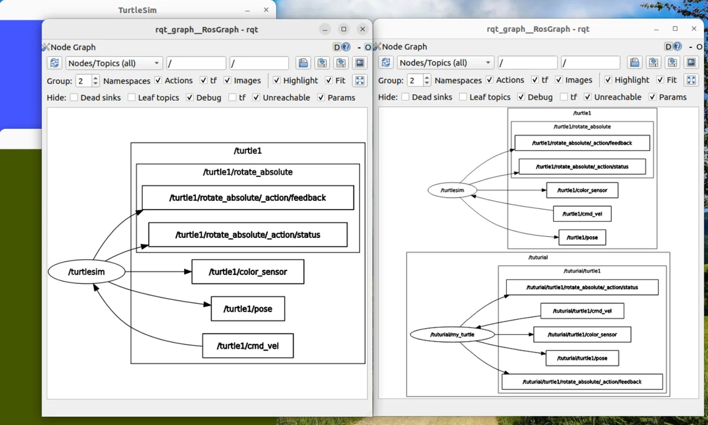
CLI에서arguments 사용하기 CLI에서arguments 사용하기
- yaml 파일로 파라미터 재설정
- 아래와 같은yaml파일 생성
- yaml파일의 설정을 이용하여turtlesim 실행 ROS arguments 예제
CLI에서arguments 사용하기 CLI에서arguments 사용하기
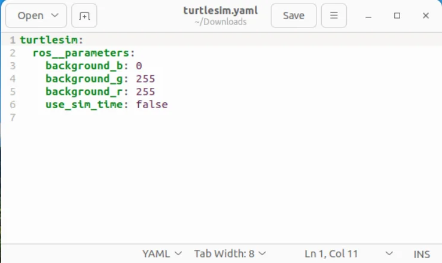
- 앞에서ROS2 CLI 명령어의 개념, 사용법 및 종류에 대해 학습하였음
- 지금부터는 새로운ROS2 CLI 명령어를 생성하는 방법을 탐구하고자함 소개
- ros2 env라는 기존에 없던ROS2 CLI를 만들기 신규ROS2 cli 작성법 ※ 필요한 파일: ros2env.zip
실행 예제¶
- ros2 폴더의src폴더로 이동하여ros2env 패키지 생성
- ros2env 폴더로 이동하여vscode 실행
- ros2env 폴더 안에command 폴더 생성 후env.py 파일과__init__.py 파일 생성 VS Code
Build 하고 실행해 보기 DOMAIN_ID 바꿔서 실행해 보기
실행 예제– env.py¶
-
env.py: 인터페이스(CLI)에서 확장 기능을 추가하는EnvCommand 클래스를 정의 CLI의“env” 메인 명령을 정의( $ros2 env list or $ros2 env set)
-
add_arguments 함수
-
파서(parser)에 서브 명령어를 동적으로 추가하여 확장 가능한 구조를 만듦 ros2env.verb는 서브 커맨드들이 모여 있는python Module 경로임
- ros2env.verb.list
- ros2env.verb.set
-
add_subparsers_on_demand 함수
-
ROS2 CLI(Command Line Interface)에 서 서브 명령어(보통 'verb'라불림)를 필요에 따라 동적으로 로드하고 추가하는 역할을 함
- ros2env.verb아래에서 플러그인(verb)를 찾고 인스턴스화하고 argparse의subparser로 등록해 주는 함수 [ 주요 인자]
- parser: 메인 명령어의 파서 객체. 이 파서 객체에 서브 명령어를 추가하여 명령어 라인에서 사용할 수 있도록함
- cli_name: CLI 도구의 이름을 문자열로 전달(ros2 env 같은 상위 명령어 이름)
- attribute_name(_verb): 서브 명령어(verb)의 이름을 속성으로 사용하여 이 속성을 기준으로 실행할 명령어를 결정
- module_name(ros2env.verb ): 서브 명령어(verb) 구현이 들어 있는 모듈의 이름
-
required: 서브 명령어가 필수인지 여부를 결정. False로 설정할 경우 서브 명령어가 없을 때 기본적으로 도움말이 출력됨 ros2env.verb로부터 필요한 시점에서command를 가져옴
-
main 메서드
-
서브 명령어가 주어지지 않은 경우 도움 말을 출력하고, 주어진 경우 해당 서브 명령어의main 메서드를 호출하여 실행 ros2 env list나ros2 env set에서list와set args._verb에 사용자가 입력한 하위 명령어(verb)가 들어옴. 서브 커맨드 입력 여부 검사 만약 사용자가 서브 커맨드를 입력하지 않았다면help 출력
실행 예제– list.py¶
-
verb폴더 생성 후 안에list.py파일 생성
-
list.py: ros2env 패키지의 일부로, ROS2 환경 변수들을 출력하는ListVerb 클래스를 정의 ros2 env –r ros2 env –d ros2 env –a
-
code import
-
get_all_env_list, get_dds_env_list, get_ros_env_list : 각각 모든 환경 변수, DDS 관련 환경 변수, ROS 관련 환경 변수를 반환하는 함수들
-
VerbExtension: ROS2 CLI 명령어 확장 기능을 제공하는 기본 클래스 * DDS: 네트워크에 연결된 여러 장치들이 데이터를 주고받을 수 있게해 주는 통신 기술 ※ 왜ros2env.api 모듈로 별도 분리해서 사용하는지 확인해 보자!!!
-
ListVerb 클래스
-
ros2env와 관련된 명령어로 환경 변수를 리스트로 출력할 수 있는 기능을 제공
-
add_arguments 함수
-
ros2 list 명령어를 실행할 때 사용할 수 있는 옵션을 정의
- -a, --all: 모든 환경 변수를 출력하도록 설정하는 플래그
- -r, --ros-env: ROS 관련 환경 변수만 출력하도록 설정하는 플래그
- -d, --dds-env: DDS 관련 환경 변수만 출력하도록 설정하는 플래그
- 각 옵션은action="store_true"로 설정되어, 명령어에 옵션을 포함할 경우 True 값을 가지며, 그렇지 않을 경우False 값을 가짐
-
help 매개변수는 각 옵션의 설명을 제공하여ros2 list --help로 명령어에 대한 도움말을 볼 때 사용됨
-
main 메서드
-
명령어 실행의main 로직을 담당
-
args 인자로 전달된 옵션 값에 따라 특정 환경 변수 리스트를 가져옴
-
예시 사용법
-
모든 환경 변수 출력: ros2 list –a
- ROS 관련 환경 변수 출력: ros2 list –r
- DDS 관련 환경 변수 출력: ros2 list -d
- args.ros_env가True일경우, get_ros_env_list() 함수를 호출하여ROS 관련 환경 변수를 가져옴
- args.dds_env가True일경우, get_dds_env_list() 함수를 호출하여DDS 관련 환경 변수를 가져옴
- 두 옵션 모두False일경우(즉, --all 옵션이거나 아무 옵션도 사용하지 않은 경우), get_all_env_list()를 호출하여 모든 환경 변수를 가져옴
코드 분석: 실행 예제– api/init.py
- api 폴더 생성 후__init__.py 파일 생성
코드 분석: 실행 예제– api/init.py
1. init.py: ROS2와 관련된 환경 변수를 읽고 설정
코드 분석: 실행 예제– api/init.py
-
get_ros_env_list 함수
-
ROS2와 관련된 환경 변수인ROS_VERSION, ROS_DISTRO, ROS_PYTHON_VERSION 값을 가져옴
- os.getenv() 함수를 사용하여 각 환경 변수를 읽어 옴
- 세 환경 변수를 문자열로 포맷 팅하여 반환
코드 분석: 실행 예제– api/init.py
3. get_dds_env_list 함수
- 이 함수는DDS와 관련된 환경 변수인ROS_DOMAIN_ID와RMW_IMPLEMENTATION 값을 가져옴
- ROS2에서DDS를 설정하기 위한 역할을 함
- 환경 변수 값이 없을 경우'None'을 반환하도록하여, 존재 여부를 확인 * RMW_IMPLEMENTATION: ROS2가데이터를 주고받을 때 어떤 방식을 사용할지 정하는 환경 변수
코드 분석: 실행 예제– api/init.py
4. get_all_env_list 함수
- 이 함수는 앞서 설명한get_ros_env_list()와get_dds_env_list()를 호출하여, 모든ROS 및DDS 관련 환경 변수를 가져옴
- 두 함수의 반환 값을 결합하여 모든 환경 변수를 하나의 문자열로 반환
코드 분석: 실행 예제– api/init.py
-
set_ros_env 함수
-
이 함수는env_name과env_value라는 두 인자를 받아 해당 환경 변수를 설정
- os.environ 딕셔너리에 값을 직접 할당하여 환경 변수를 설정하며, os.getenv()로 설정된 값을 다시 확인하여 반환
- 환경 변수 설정 후 반환 값을 통해 변수 명과 설정된 값을 문자열 형태로 확인 가능
실행 예제– set.py¶
- 이전에 만들어 두었던verb 폴더 안에set.py 파일 생성
2. set.py: ros2env 패키지를 사용하여ROS2 Humble에서 환경 변수를 설정하고 출력하는 기능을 제공
3. code import
- get_all_env_list: 모든ROS와DDS 관련 환경 변수를 가져오는 함수. 환경 변수를 조회하여 현재 설정 상태 확인 가능
- set_ros_env: 특정ROS 환경 변수를 설정하는 함수. 환경 변수의 이름과 값을 입력하여 새로운 설정 가능
- VerbExtension: ROS2 CLI 확장 명령어를 구현하기 위한 기본 클래스. 이 클래스는ros2
와 같은 형식으로 명령어를 확장할 수 있도록 지원하며, ROS2 Humble에서SetVerb 명령어를 추가하는 데 사용됨
4. SetVerb 클래스
- ROS 환경 변수를 설정하는 데 사용되는 클래스로, VerbExtension을 상속받아ROS2 명령어 확장을 구현함
5. add_arguments 함수
- ROS2 명령어에 필요한 옵션과 인수를 정의
- parser.add_argument() 함수를 통해 두 개의 필수 인자를 추가 ✓ env_name: 설정할 환경 변수의 이름을 입력. ROS_VERSION, ROS_DISTRO 등의 변수 명이 해당됨 ✓ value: 환경 변수에 설정할 값. 사용자가ros2 set
형식으로 입력한 값이 여기에 전달됨 - help 매개변수는 각 인자의 설명을 제공. ros2 set --help 명령어로 실행됨
6. main 함수
- 실행의 주로 직을 담당하는 함수. args 인자로 전달된env_name과value 값을 사용하여 특정ROS 환경 변수를 설정
- env_name 또는value 값이 있는 경우에만 환경 변수를 설정 • 환경 변수 설정: set_ros_env(args.env_name, args.value) 함수가 호출되어 해당 환경 변수에 값을 설정
- get_all_env_list() 함수를 호출하여 모든 환경 변수의 현재 상태를 가져오고, [Current ROS environment variable]: 메시지와 함께 출력
코드 분석: 실행 예제– verb/init.py
- verb 폴더 안에__init__.py 파일 생성
코드 분석: 실행 예제– verb/init.py
2. init.py: ROS2 Humble에서env 명령어에 대한 확장 포인트를 정의하기 위한 파일로ROS2 CLI 확장을 위한 기본 템플릿으로 사용됨
코드 분석: 실행 예제– verb/init.py
3. code import
- PLUGIN_SYSTEM_VERSION: 현재 사용 중인ROS2 CLI 플러그인 시스템의 버전을 나타냄
- satisfies_version: 플러그인 시스템의 버전과 확장의 버전이 호환되는지 검사하는 함수. 특정 버전 규칙을 따르는지 확인하여, 버전 불일치로 인한 오류를 방지
코드 분석: 실행 예제– verb/init.py
4. VerbExtension 클래스
- ROS2 CLI 확장 시스템에서 명령어 확장을 위한 기본 클래스로 사용됨
- NAME : 확장의 이름을 설정할 때 사용되는 속성
- EXTENSION_POINT_VERSION : 이 확장이 구현하는 확장 포인트의 버전
코드 분석: 실행 예제– verb/init.py
5. init 함수
-
satisfies_version 함수를 사용해 현재 플러그인 시스템 버전이EXTENSION_POINT_VERSION과 호환되는지 확인
-
add_arguments 함수
-
ROS2 명령어에 필요한 인자들을 정의하기 위한 메서드. 기본 클래스에서는 비어 있으며, 구체적인 확장에서 필요에 따라 이 메서드를 오버 라 이드하여 구현함
코드 분석: 실행 예제– verb/init.py
7. main 함수
- 각 명령어 확장에서 반드시 구현해야하는 메서드로, 명령어의 주요 로직을 수행하는 함수
- 기본 클래스에서는NotImplementedError를 발생시켜 이 메서드가 반드시 하위 클래스에서 오버 라 이드되어야함을 알림
복습Override(Object Oriented Programming)¶
Override란?
- 상속 받은 부모 클래스(슈퍼 클래스)의 메서드를, 자식 클래스(서브 클래스)에서 다시 정의함
- 자식 클래스에서 상속받은 메서드를 내 스타일로 다시 작성하는 것 Override가 필요한 이유?
- 부모 클래스는 일반적/ 공통적인 기능을 정의
- 자식 클래스는 특수화/ 구체적인 기능을 하고 싶을 때
- 코드 재상용성을 높이고, 다형성(Polymorphism)도구 현 다형성? 하나의 인터페이스(메서드 이름)가 여러 형태로 동작하는 것
복습Override vs Overload¶
※ C++, Java에서는Overload지원하나Python에서는 엄밀하게 보면 지원하지 않으나source code내에서 분기하는 형태로 구현 가능
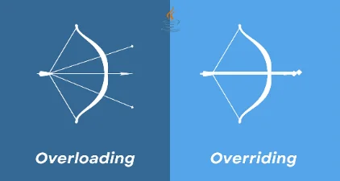
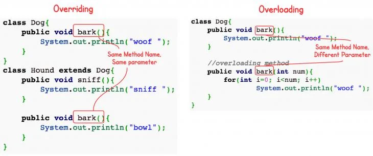
복습interface와 추상 클래스¶
Interface란?
- 이런 기능들을 갖춘 객체여야한다고 선언
- 어떤 기능을 구현해야하는지 약속만 정해 놓은 것 Interface가 필요한 이유?
- 여러 개발자가 같은 시스템 안에서 다양한 기능을 추가
- 개발자 각자의 방식으로 메서드 이름, 동작 방식 정한다면?
- 코드 재사용, 일정 규모 이상 프로젝트 협업 필수!!! 구현체 구현체 ※ Python에서는interface keyword가없으며 대신 추상 클래스를 사용 ※ Interface는규칙(틀)만 제공하나 추상 클래스는 틀+ 기본 기능 제공
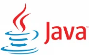
코드 분석: 실행 예제– setup.py
- setup.py의entry_points를 아래와 같이 수정 env라는 이름으로ros2env/command/env.py 파일 안의EnvCommand 클래스를 등록(ros2 env 명령이 동작) extention_point 등록. ros2env/verb.py파일 안의VerbExtention클래스를 연결. Verb가 어떤 인터페이스를 사용하는지 알려 줌 서브 명령어(verb)를 등록하는 부분. ros2env/verb/list.py와ros2env/verb/list.py 2개 클래스. ros2 env list와ros2 env set 입력 가능
코드 분석: 실행 예제– setup.py
- 터미널을 열어 패키지를 빌드하고, 새로 빌드된 패키지를 사용
- 아래 명령어들을 실행하여 제대로 빌드가 되었음을 확인
Intra-Process Communication¶
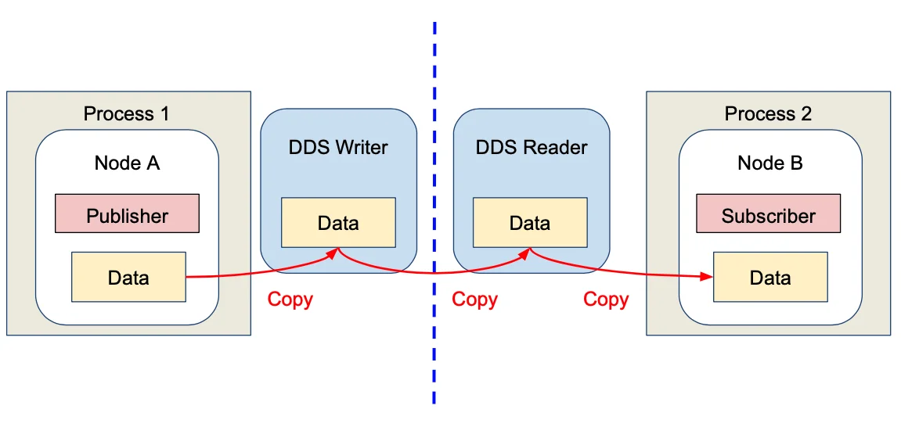
- ROS는 복수 개의node를 사용하여 개발이 이루어짐
- 단일 컴퓨팅 시스템에서 복수 개의node 사용시
- 데이터 통신을 위한 작업으로 인한 전체적인 성능 저하 및 메모리 사용량 증가하는 단점
- ROS2에서는 이를 해결하기 위해IPC(Intra-Process Communication)제공
-
예, 모바일 로봇: 라이다 데이터 노드, 모터제어노드, 로봇위치추종노드, 경로 생성 노드 등...... Intra-process communication Intra-process communication
-
ROS에서 서로 다른 프로세스의 아이디를 확인해 보면 명확히 다른 것을 확인 가능 Intra-process communication
-
서로 다른 프로세스는 송수신되는 데이터가 여러 번 메모리에 복사되어 성능 저하가 발생 두노드 간의 일반적인 데이터 흐름 이 과정에서 여러 번의 메모리 복사가 발생하며, 특히 대용량 데이터(이미지, LiDAR 포인트 클라우드 등) 전송 시 메모리 사용량 증가와 성능 저하 발생 [ 기본적인 데이터 복사] 일반적으로ROS 2에서노드 간에 데이터를 전달할 때, 메시지는 다음과 같은 단계를 거침
-
퍼블리셔가 메시지를 생성
-
사용자가 메시지를 생성하면, 해당 데이터가 메모리에서 특정 주소에 저장됨
-
DDS 미들 웨어를 통한 데이터 전달 1. ROS2는DDS(Data Distribution Service)를 사용하여 메시지를 전달함 2. 일반적인DDS 구현에서는 데이터를 네트워크 버퍼 또는 공유 메모리로 복사하여 송신함
-
구독자가 데이터를 수신 1. 수신된 데이터는 다시 사용자 프로그램의 메모리로 복사됨 2. 여러 개의 구독자가 존재할 경우, 각 구독자에게 별도로 복사됨
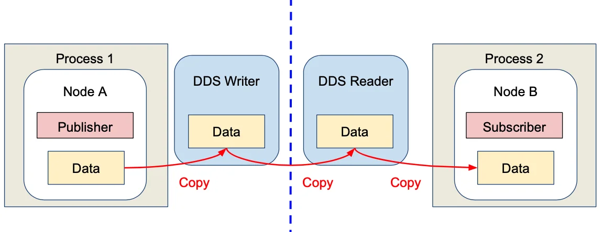
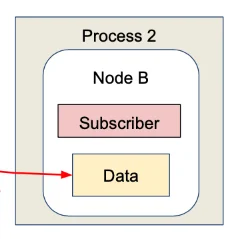
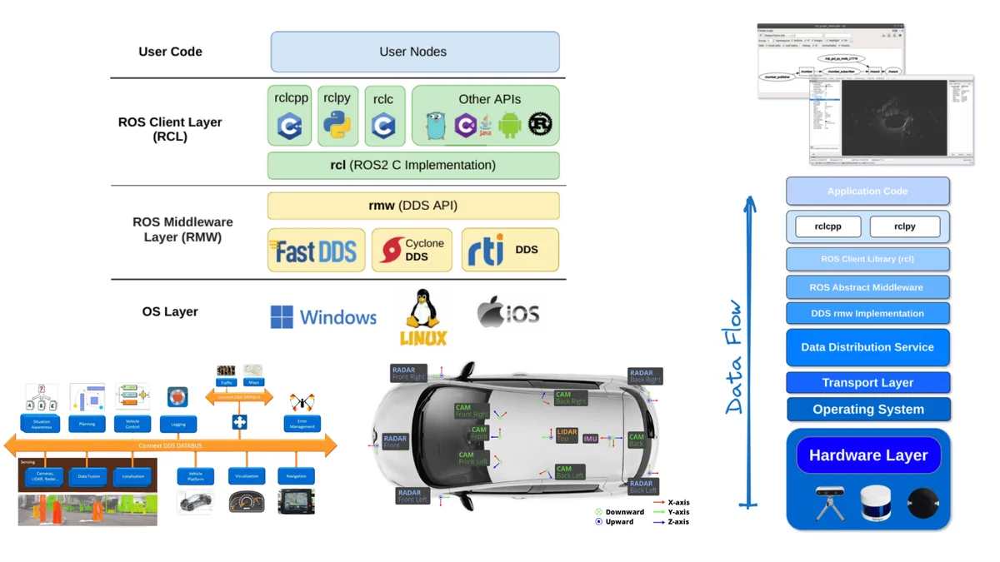
-
IPC를 이용하면 복수 개의 노드를 단일 프로세스에서 처리하여 해당 문제를 해결 Intra-process communication zero-copy [ Zero-Copy란? ] 데이터 복사를 최소화하여 성능을 최적화하는 기술 ROS 2에서는Fast DDS SHM (Shared Memory) 및Cyclone DDS Iceoryx 등의DDS 미들웨어에서 지원 [ Zero-Copy 방식의 데이터 흐름]
-
퍼블리셔가 메시지를 생성하면, 데이터가 공유 메모리(SHM, Shared Memory)에 저장됨
- DDS는 데이터를 네트워크로 전송하지 않고, 같은 프로세스 또는 동일한 머신 내의 구독자들에게 참조 방식으로 전달
- 구독자는 데이터를 복사 없이 직접 참조하여 사용함
- 즉, 데이터가 한 번만 생성되고 여러 구독자가 이를 직접 읽을 수 있어 메모리 복사가 필요 없음

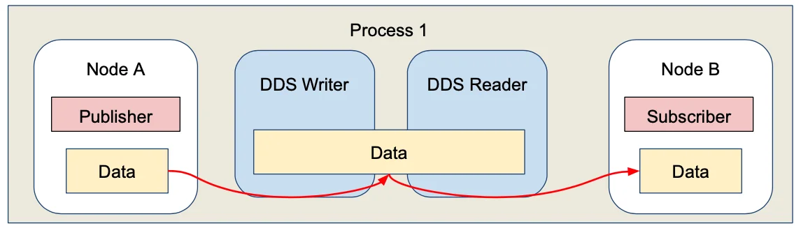
프로세스1개
- 노드2개(Producer, Consumer)가1개 프로세스에 있음
- publisher →subscriber
- 메모리 복사 없이 빠르게 메시지 전달(메모리 주소) 메시지address 1개 https://github.com/ros2/demos/tree/humble/intra_process_demo/src https://github.com/ros2/demos/tree/humble/intra_process_demo/src
Topic1 Topic2 pipe1 노드 pipe2 노드 publishing subscribing publishing subscribing 메시지address 1개
- 다음 명령어를 이용하여 이미지 파이프라인을 실행 Image pipeline demo Intra-process communication 이 예제는 총3개노드로 구성되어 있음
- camera_node : OpenCV 라이브러리를 이용하여 카메라 입력 값을 받아 sensor_msg::msg::Image 메시지 타입으로publishing해 주는 역할
- watermark_node : camera_node에서publishing하는 이미지를 subscribing하고 이미지에text추가하여publishing
-
Image_view_node : camera_node에서publishing하는 이미지를 subscribing하여cv::imshow를 통해 보여 줌 camera_node watermark_node image_view_node camera_node watermark_node image_view_node
-
첫 번째 터미널은 모두 같은pid와 동일한 주소 값 Intra-process communication Image pipeline demo pid는process id의 약자로 컴퓨터에서 실행 중인 각 프로세스를 구별하기 위해 부여된 고유한 번호
- 두 번째 터미널은camera_node와watermark_node는 같은 프로세스에서zero-copy로 이미지 송수신하지만, image_view_node는 다른 프로세스에서 실행되며 참조하는 메모리 주소도 다름 camera_node watermark_node image_view_node
(Quality of Service)
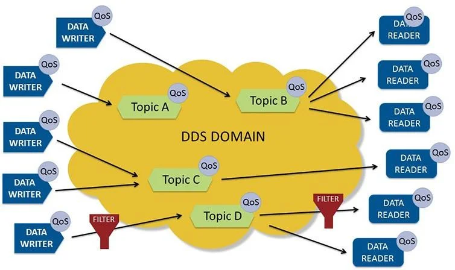
DDS의 서비스 품질(QoS, Quality of Service)
- QoS(Quality of Service)란 쉽게 말해‘데이터 통신 옵션’
- ROS2는TCP 방식과UDP 방식을 선택적으로 사용 가능
- TCP: 신뢰성(Reliability) 중심
- UDP: 속도 중심
- 이를 위해ROS2에서는DDS의QoS 도입
- 퍼블리셔또는서브스크라이버선언시QoS를 매개 변수로 지정하여 원하는 통신 방식 설정 가능
- QoS로 바꿀 수 있는 것은 데이터 전송 시 실시간성(real time) 설정 관련 부분, 대역 폭 옵션, 데이터 지속성, 중복성 등이 있음 DDS의QoS QoS의종류
- 현재DDS에서 설정 가능한QoS 항목으로는22가지가 있음
- 대표적인QoS 항목
- Reliability : ROS2에서는 신뢰도를 우선(reliable)으로 설정하거나 통신 속도 최우선(best effort)으로 설정
- History : 정해진 크기만큼 데이터를 보관하는 기능(=depth)
- Durability : 데이터수신하는서브스크라이버가생성되기전, 데이터의 사용 유무를 설정
- Deadline : 정해진 주기 내 데이터의 발신 및 수신이 없는 경우 이벤트 함수 실행
- Lifespan : 정해진 주기 내 수신되는 데이터에만 유효 판정, 이외 데이터는 삭제
- Liveliness : 정해진 주기 내 노드 또는 토픽의 생사를 확인 QoS의종류 History DDS의QoS ROS2에서 사용하는QoS 옵션
- Values
- 예시 History 데이터를 몇 개나 보관할지 결정하는QoS 옵션 KEEP_LAST 정해진 메시지 큐 사이즈(depth) 만큼 데이터 보관
- depth: 메시지 큐 사이즈(KEEP_LAST 설정일 경우에만 유효) KEEL_ALL 모든 데이터 보관(최대 사이즈는DDS 벤더마다 다름)
Reliability ROS2에서 사용하는QoS 옵션
- Values
- 예시 Reliability 신뢰성 또는 속도 우선 설정 BEST_EFFORT 데이터 송신에 집중. 전송 속도를 중시하며 네트워크에 따라 유실 발생 가능성 RELIABLE 데이터 수신에 집중. 신뢰성 중시하며 유실 발생 시 재전송을 통해 수신 보장
Durability ROS2에서 사용하는QoS 옵션
- Values
- 예시 Durability 데이터수신하는서브스크라이버가생성되기전, 데이터의 사용 유무를 설정 TRANSIENT_LOCAL Subscription이 생성되기 전 데이터도 보관(Publisher에만 적용 가능) VOLATILE Subscription이 생성되기 전 데이터는 무효
Deadline ROS2에서 사용하는QoS 옵션
- Values
- 예시 Deadline 정해진 주기 내 데이터의 발신 및 수신이 없는 경우 이벤트 함수 실행 deadline_duration Deadline을 확인하는 주기
Lifespan ROS2에서 사용하는QoS 옵션
- Values
- 예시 Lifespan 정해진 주기 내 수신되는 데이터에만 유효 판정, 이외 데이터는 삭제 lifespan_duration Lifespan을 확인하는 주기
Liveliness ROS2에서 사용하는QoS 옵션
- Values
- 예시 Liveliness 정해진 주기 내 노드 또는 토픽의 생사를 확인 liveliness 자동 또는 매뉴얼로 확인할지 지정하는 옵션(3가지 중 선택) (AUTOMATIC, MANUAL_BY_NODE, MANUAL_BY_TOPIC) lease_duration Liveliness를 확인하는 주기
rmw_qos_profile¶
rmw_qos_profile 사용과 유저QoS 프로파일 사용
- RMW QoS Profile: ROS2의RMW에서 가장 많이 사용하는QoS 설정을 하나의 세트로 표현한 것
- 목적에 따라Default, Sensor Data, Service, Action Status, Parameters, Parameters Events의6가지로 구분 Default Sensor Data Service Action Status Parameters Parameter Events Reliability RELIABLE BEST_EFFORT RELIABLE RELIABLE RELIABLE RELIABLE History KEEP_LAST KEEP_LAST KEEP_LAST KEEP_LAST KEEP_LAST KEEP_LAST Depth (History) 1000 1000 Durability VOLATILE VOLATILE VOLATILE TRANSIENT LOCAL VOLATILE VOLATILE DDS의QoS DDSVendor Directory
- 1989년에 설립된 국제 표준화 기구
- 분산 시스템, 모델링 언어, 미들웨어 등 다양한 표준을 개발 및 관리
- 대표적인 표준 중 하나가DDS(Data Distribution Service) The DDS Foundation Announces 20th Anniversary of the DDS Object Management Group Publishes Anything-As-A-Service Glossary https://www.omg.org https://www.dds-foundation.org
- OMG가 만든 미들 웨어 통신 표준
- 실시간성, 높은 신뢰성, 확장성
- 로봇뿐만 아니라 항공 우주, 국방, 자동차, 산업 자동화 등 다양한 분야 활용 ROS2] ros2 topic list 로 떠야할
topic 이 뜨지 않는
error(+ daemon 의역할
)
- ROS1에서의 통신 인프라 관련 한계 점과 문제점(네트워크 확장성, 신뢰성 부족)
- OMG가표준화한DDS를 기본 통신 프로토콜로 채택
- ROS2의Publisher, Subscriber 통신, 서비스 호출, 액션 서버 등 저수준 통신이DDS기반으로 작동
- DDS구현 체들 위에RMW(ROS Middleware Interface)라는 추상화 레이어
- 이로 인해 다양한DDS Vendor를 선택할 수 있음
- 선택한 이유: 다양한QoS, 멀티 캐스트, P2P통신, 보안(암호화, 인증), 실시간성, 다양한 상용/오픈 소스 구현 체 존재 https://docs.ros.org eProsima: Middleware, Robots and AI https://www.eprosima.com Eclipse Cyclone DDS 0.11.0 documentation — Eclipse Cyclone DDS, 0.11.0 https://cyclonedds.io RTI Connext DDS Community · GitHub https://www.rti.com
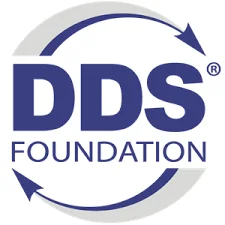
DDS& QoS (Data Distribution Service) (Quality of Service) 개념
- ROS2 기본 통신 미들 웨어로 중앙 서버 없이 분산 네트워크에서 데이터를 교환
- DDS는ROS2의 기본 통신 프로토콜
- DDS통신의 품질을 조정하는 설정으로, 메시지 신뢰성, 내구성, 저장 개수 등을 관리
- DDS를 통해 통신 품질을 조정하는 방식
- QoS설정에 따라DDS의 동작 방식이 달라지며 각 애플리케이션에 맞는 성능을 최적화
- 네트워크 환경과 응용 프로그램의 요구 사항에 따라 적절한QoS를 설정해야함 특징 실시간 데이터 교환을 위한 미들 웨어 표준, ROS2의 통신 기반이 되는 핵심 기술
- QoS 주요 설정6종류 Reliability(신뢰성), Durability(내구성), History(데이터 저장 개수), Lifespan(수명), Deadline(데드라인), Liveliness(활성 상태) 기타
- Publisher-subscriber 모델
- Brokerless(중앙 서버 없음)
- 자동 발견(Discovery) : 네트워크상의 노드들이 서로를 자동으로 인식하고 연결
- 신뢰성& 확장성: 다양한QoS 설정을 통해 신뢰성과 성능을 조절
- BEST_EFFORT + VOLITILE : 카메라 영상 스트리밍(실시간성 우선, 일부 프레임 손실 가능)
- RELIABLE + TRANSIENT_LOCAL : 로봇 센서 데이터(정확한 수신 보장, 최신 데이터 유지)
- KEEP_LAST(10 + LIFESPAN(5s) : 5초 동안 최신10개의 데이터를 유지하는 센서 데이터 RTI Connext DDS Community · GitHub

rmw_qos_profile 사용과 유저QoS 프로파일 사용
- 예를 들어, 센서와 같이 지속성이 높으며 순간적으로 데이터를 빠르게 전달해야하는 경우 아래와 같이 설정
rmw_qos_profile 사용과 유저QoS 프로파일 사용
- 실제 파이썬 코드에서 사용은 다음과 같이'qos_profile_sensor_data' 모듈을import하여 사용함
유저QoS 프로파일 rmw_qos_profile 사용과 유저QoS 프로파일 사용
- 사전 정의한rmw_qos_profile 이 외에도 유저가 직접 설정하여 새로운 프로파일을 만들어 사용 가능
- 아래와 같은QoS 모듈을import
- 코드에서'QoSProfile'을 선언하여 원하는 옵션을 커스 텀하게 설정
유저QoS 프로파일 rmw_qos_profile 사용과 유저QoS 프로파일 사용
- 다음'create_publisher'와 같은 함수를 사용할 때'rmw_qos_profile' 대신 유저 가정의 한 커스 텀 QoS 프로파일을 매개변수로 사용
- 유저QoS 프로파일을 사용하는 것이 커스 터 마이 징에 용이하기 때문에, 실제 개발 시 더 많이 사용됨
QoS 프로그래밍¶
- Topic, Service, Action의QoS 설정 ⇢예제 코드 중심의QoS 프로그래밍 코드 분석 ※ 필요한 파일: py_pubsub_qos.zip Topic QoS Programming Topic, Service, Action의QoS 설정
- Topic의기본QoS 설정은RMW QoS Profile의 기본 설정과 동일
- 즉, Reliability는RELIABLE , History는KEEP_LAST에Depth = 10을 따르며Durability는VOLATILE이기본
- 배포한 패키지ex_calculator의 예시를 보면 다음과 같음
- ex_calculator/ex_calculator/arithmetic/argument.py
Service QoS Programming Topic, Service, Action의QoS 설정
- ROS2 Service의 경우, 특별한 케이스 외에는 기본QoS 사용
- /opt/ros/humble/local/lib/python3.10/dist-packages/rclpy/node.py →line 1436~1444
Service QoS Programming Topic, Service, Action의QoS 설정
- qos_profile_services_default는RMW의qos_profiles과types.h 헤더 파일에서 확인할 수 있음
- /opt/ros/humble/include/rmw/rmw/qos_profiles.h →line 64
QoS Programming Topic, Service, Action의QoS 설정
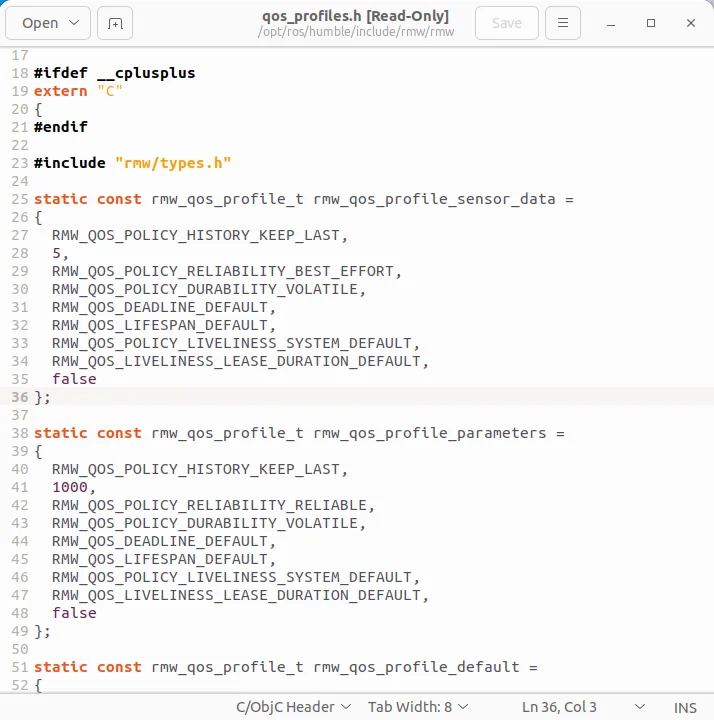
Service QoS Programming Topic, Service, Action의QoS 설정
- qos_profile_services_default는RMW의qos_profiles과types.h 헤더 파일에서 확인할 수 있음
- /opt/ros/humble/include/rmw/rmw/types.h
Action QoS Programming Topic, Service, Action의QoS 설정
- 액션은 토픽과 서비스를 모두 사용하는 복합 형태
- 액션 토픽의 경우qos_profile_services_default를 기본 설정
- 피드백 퍼블리셔의 경우QoSProfile (depth = 10) 혹은rmw_qos_profile_default를 초기 값으로 사용
- 액션 상태 퍼블리셔의 경우, 전용 프로파일인qos_profile_action_status_default를 기본 값으로 사용
- 파이썬의 경우, goal_service_qos_profile, result_service_qos_profile, cancel_service_qos_profile, feedback_pub_qos_profile, status_pub_qos_profile에 대한 기본 설정을 사용
- /opt/ros/humble/local/lib/python3.10/dist-packages/rclpy/action/server.py Action QoS Programming Topic, Service, Action의QoS 설정
- /opt/ros/humble/local/lib/python3.10/dist-packages/rclpy/action/server.py
실습 QoS Programming QoS 실습
- 6가지QoS에 대해 실습
- ROS2에서 기본적으로 제공하는 데모QoS를 이용하여, QoS 설정 값 변화에 따른 결과를 확인할 수 있음 1. History 2. Reliability 3. Durability 4. Deadline 5. Lifespan 6. Liveliness History QoS Programming QoS 실습
- 데이터 전송 시점 이후 보관할 데이터의 정책을 설정하는 옵션
- KEEP_LAST: Depth로 설정한 만큼 사이즈의 데이터 보관(최근 몇 개까지만 저장)
- KEEP_ALL: 모든 데이터 보관(시스템 메모리 한도까지)
- 제공된'py_pubsub' 코드를 활용하여History QoS 설정 실습
- Publisher와Subscriber의QoS 프로파일 값을 변경 메시지를 몇 개까지 버퍼에 저장할지를 설정하는 옵션 ✓py_pubsub/src/publisher_member_function.py 설정
- Repository 생성
- qos_ws/src 폴더를 만든 후 해당 폴더로 이동
- 제공된 코드 파일의 압축 풀기
코드 분석: py_pubsub/src/publisher_member_function.py 설정
- QoS profile 변경
- Publisher에는QoS(Quality of Service) 프로파일의 기본 값으로rmw_qos_profile_default로사용
- 'create_publisher'의3번째 인자에10을 넣어 주면, depth가10인 기본 프로파일'QoSProfile(depth=10)'이 입력되는 구조
코드 분석: py_pubsub/src/publisher_member_function.py 설정
- QoS profile 변경
- History의값을KEEP_LAST로 변경하고 싶다면, 다음과 같이 작성
- KEEP_ALL로 변경하고 싶다면 ros_tutorials
코드 분석: py_pubsub/src/publisher_member_function.py 설정
- QoS profile 변경
- 작성한QoS profile을 적용하려면, create_publisher 부분에 작성한qos_profile을 인자로 전달
- 이번 예제에서는History 값을KEEP_ALL로 설정하여 테스트
- publisher 노드를 실행한 후 한참이 지나도 모든 데이터가subscriber에게 전달되는지 확인
py_pubsub/src/publisher_member_function.py¶
- 퍼블리셔QoS profile 변경
- Reliability는RELIABLE로변경
- History는다시KEEP_ALL로변경
- Durability를TRANSIENT_LOCAL로변경
- RELIABLE: 손실을 방지하고 신뢰도를 우선시함
- KEEP_ALL : 모든 데이터 보관
- VOLATILE: Subscription이 생성되기 전 데이터도 보관
코드 분석: py_pubsub/src/subscriber_member_function.py 설정
- QoS profile 변경
- 서브스크라이버에도마찬가지로, QoS 프로파일을 적용 [ 활용 사례]
- 카메라가0.01초마다 사진을Publishing, Subscriber는 딥 러닝Inference 0.1초소요 →최근5개 데이터만 버퍼에 저장해 두고 그 이전 데이터는 버림
- 로봇이 경로 명령(move to waypoint)를 보내고 있는 경우 하나라도 메시지를 놓치면 문제 발생→이때KEEP_ALL로 모든 데이터(waypoint) 보관
- 배터리 잔량, 온도 센서 모니터링 등→과거 이력 데이터보다는 지금 실시간 현재 상태만 모니터링하고 싶은 경우→가장 최신 메시지1개만 받음
빌드후py_pubsub 실행¶
- 빌드
- Talker 실행
- Listener 실행(Talker의Publish 메시지가10개 이상 발행된 뒤 실행)
History 결과 확인¶
- Talker
- Listener ※ QosHistoryPolicy를KEEP_ALL과KEEP_LAST로 옵션을 변경해서build 후 실행해서 비교해 보기 QoSHistoryPolicy 설정 Depth 적용 여부 메시지 저장 방식 KEEP_ALL X (무시됨) 모든 메시지를 저장 (RMW에 따라 차이는 있지만 시스템 메모리에 의해 제한) KEEP_LAST O (필수 설정) 최근depth 개수만 유지
Reliability QoS Programming QoS 실습
- TCP처럼 손실을 방지하면서 신뢰도를 우선시(전달 보장) : RELIABLE
- UDP처럼 손실을 감안하고 통신 속도를 우선시(데이터 유실 허용, 실시간성) : BEST_EFFORT
- 이번 예제에서는 인위적으로 네트워크 손실을 발생한 뒤, BEST_EFFORT를진행
- ROS2에서 기본적으로 제공하는'demo_node_cpp' 패키지를 활용 메시지를 얼마나 신뢰성 있게 전달할지를 설정하는 옵션 [ 활용 사례]
- BEST_EFFORT(약간의 손실을 감수하더라도 지연 없는 빠른 처리가 더 중요한 경우) ① 카메라 영상 스트리밍(frame 몇 개 누락되어도 괜찮음) ② LiDAR 센서 데이터 ③ 주행 중 실시간 거리 센서 ④ 드론 영상 중계 [ 활용 사례]
- RELIABLE(모든 메시지는 반드시 전달되어야하는 경우) ① 로봇 제어 명령(STOP, TURN, MOVE) ② 지도 데이터 전송(SLAM map) ③ 긴급 정지 신호(Emergency Stop) ④ 산업용 로봇 공정 제어 신호 ✓Reliable 테스트
- tc 명령어를 통한 데이터 손실 명령
- 이번 예제에서는45%의 손실로 설정→※ 테스트 후에 반드시 원 복해 주어야함
- Best effort 옵션의Listener 실행(Listener 먼저 실행)
- Talker 실행
Reliable 결과 확인¶
- Talker
-
Listener
-
결과 해석
- Listener가 먼저 실행되어, Talker가발행하기를 대기하였음
- 그러나, 데이터 손실에 의해1 ~ 5번째의 데이터가 손실
- Listener는 손실된 데이터를 받지 못한 결과를 확인할 수 있음
- 데이터 손실 명령 복원
- 추후 원활한 네트워크 통신을 위해 데이터 손실 명령 초기화
-
명령어의add 부분을delete로 변경하여 복원
-
데이터 손실 명령 복원 확인
- Listener와Talker를 다시 실행하여 데이터 손실 명령어가 제대로 복원되었는지 확인하기
- Listener
- Talker
Durability QoS Programming QoS 실습
- Subscriber가 생성되기 전, 데이터를 사용할지 폐기할지에 대한QoS 옵션
- TRANSIENT_LOCAL : Publisher가마지막으로 보낸 메시지를 메모리에 저장. 새로운Subscriber가 연결되면 전달(Publisher에만 적용 가능)
- VOLATILE : Subscriber가 연결되기 전 데이터는 사용하지 않고 버림. 새로 연결되면 새로운 메시지부터 받음
- 'py_pubsub' 패키지에서QoS 프로파일을 변경하여 적용
- VOLATILE 로 설정하는 예제 실행 Publisher가 보낸 메시지를 얼마나 오래 저장해서 새로운Subscriber에게 줄 것인가 [ 활용 사례]
- TRANSIENT_LOCAL ① 새로운Subscriber가 붙었을 때 지금 현재 로봇의 상태를 알고 싶을 때 ② SLAM 후 완성된 맵을Publishing 하는 노 드 ③ 나중에 들어오는 네비게이션 노드가 맵을 받아야하는 경우 [ 활용 사례]
- VOLATILE ① 과거 영상 프레임은 의미가 없고 실시간 프레임만 받고 싶을 때 ② Publisher : /camera/image_raw ③ Subscriber : 영상Viewer ✓py_pubsub/src/publisher_member_function.py 설정
- 퍼블리셔QoS profile 변경
- History는다시KEEP_LAST로변경
- durability를VOLATILE로변경
- KEEP_LAST : 정해진 메시지 큐 사이즈만큼 데이터 보관
-
VOLATILE : Subscriber가 생성되기 전 데이터는 사용하지 않음
-
빌드
- Talker 실행
- Listener 실행(Talker의Publish 메시지가10개 이상 발행된 뒤 실행)
Durability 테스트 결과 확인¶
- Talker
- Listener Durability Depth 적용 여부 메시지 저장 방식 VOLATILE X (무시됨) 메시지는 발행될 때만 존재, 새로운 구독자는 이전 메시지 받을 수 없음 TRANSIENT_LOCAL O 최근depth 개수만 유지
History와Durability의관계 QoS Programming QoS 실습 History Durability 개념
- 얼마나 많은 메시지(몇개)를 보관할까?
- 새로 등장한Subscriber에게 이전 메시지를 줄지 안 줄지를 결정 종류
- KEEP_LAST : 마지막n개저장(Depth)
- KEEP_ALL : 가능한 모든 메시지 저장
- VOLATILE : 새로운 메시지만 받음
- TRANSIENT_LOCAL : Publisher가 최근 발행한 메시지 저장하고 나중에 등장한Subscriber에게 메시지 보내 줌(개수는History에서 결정) 예시
- VOLOTILE + KEEP_LAST(10) →Publisher는최근10개 메시지 저장. New Subscriber가 나중에 붙으면? 과거 데이터 못 받음
- TRANSIENT_LOCAL + KEEP_LAST(10) →Publisher는최근10개 메시지 저장. New Subscriber가 나중에 붙으면? 최근10개중 가능한 메시지 다시 보내 줌 사례
- 센서 스트리밍(LiDAR등) →VOLATILE + KEEP_LAST(depth 적당히)
- 중요한 공지 사항(경고/에러 메시지) →TRANSIENT_LOCAL + KEEP_LAST(1 ~ 몇개)
- 초기 설정 정보(맵 데이터, Config) →TRANSIENT_LOCAL + KEEP_ALL(메모리 여유 있는 경우) ※ Durability가TRANSIENT_LOCAL이어야New Subscriber가 과거 메시지를 받을 수 있다! 얼마나 받을 수 있는지는History(Depth)에따라! Deadline QoS Programming QoS 실습
- 정해진 주기 내 데이터의 발신 및 수신이 없는 경우, EventCallback 함수를 실행하는QoS 옵션
- ROS2의 기본 패키지quality_of_service_demo의deadline.py 예제 살펴보기
- /opt/ros/humble/lib/python3.10/site-packages/quality_of_service_demo_py/deadline.py 정해진 시간 안에 메시지가 도착해야한다. 설정한 시간 내 도착하지 않으면 이벤트 발생 [ 활용 사례]
- 100ms마다 센서 값을Publishing하는 노 드가 센서 고장으로1초 동안 데이터를 못 보낸다 면
- Subscriber는 센서가 문제 있다는 것을 알 수 있음→센서 데이터 감시
- 로봇의Heartbeat 또는 제어 명령: Robot이 일정 주기로 살아 있다는 메시지를 보내야하거나500ms 이상 끊어지면 로봇은 안정상 멈춰야할 수도 있음.
- 500ms 동안 새로운 명령이 없으면 로봇이Emergency Stop 모드로 전환해야할 수도
- 환자의Vital Sign 데이터를 주기적으로 받아야하는 모니터링 시스템→데이터가 일정 주기 이상 끊어지면 즉시 경고 발생 ✓deadline.py – main 함수
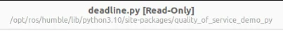
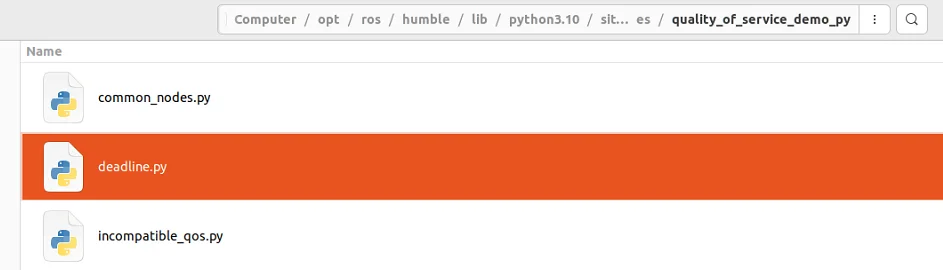
코드 분석: deadline.py 분석
- 주기 설정
- 'parsed_args.deadline'을 통해 사용자가 정의한 주기를 설정할 수 있음
- 'Duration' 객체로 주기 정보를 갖는 변수'deadline'의선언
- 만약, deadline을500으로 설정 시, 500/1000초= 0.5초로 설정되는 코드
- QoS 프로파일 설정
- deadline 인자에, 'Duration' 객체로 선언된 변수'deadline' 할당
코드 분석: deadline.py 분석
- Callback 함수 선언 및Talker, Listener 선언
- Timer로Publishing/Pause 반복 설정
- Talker가publish_for_seconds 동안 메시지를 보낸 다음pause_for_seconds 동안 발행을 멈춤→의도적으로deadline 위반 상황 발생시킴
터미널에서Deadline 데모 실행¶
- Deadline 0.7초, 데이터 발행 기간3초, 일시 정지0초로 설정해 보자
- deadline 700 : deadline 시간700ms
- publish-for : talker가 몇 초 간 발행할지
- pause-for : talker가 몇 초 간 멈출지
- 실행시/qos_talker와/qos_listener 노드가 함께 실행
- 0.7초 내 데이터가 수신되지 않을 경우EventCallback 함수 실행
-
3초 동안 데이터가 발신되고0초 동안 일시 정지이기 때문에, 결국 쉴 틈 없이 데이터를 발신
-
Deadline 0.7초, 데이터 발행 기간3초, 일시 정지0초로 설정해 보자
- 실행 결과
-
데이터가 쉴 틈 없이 발신 및 수신되기 때문에 이벤트 함수 호출이 되지 않음
-
Deadline 0.7초, 데이터 발행 기간3초, 일시 정지1초로 설정해 보자
- 일시 정지 시간을 늘려 인위적으로deadline을 넘어 보자
-
즉, 3초 동안 발행하다1초 동안 쉬게 된다면 어떤 결과가 나오는지 확인
-
Deadline 0.7초, 데이터 발행 기간3초, 일시 정지1초로 설정해 보자
- 실행 결과 [ 활용] Deadline QoS 설정을 사용하면, 토픽을 정해진 시간 안에Publishing 못 하거나Subscribing하지 못할 때, 이벤트 콜백 함수 호출하여 특정 루틴을 수행하게할 수 있다.
Lifespan QoS Programming QoS 실습
- 정해진 주기 내 수신되는 데이터만 유효 판정, 이외 데이터는 삭제하는QoS 옵션
- ROS2의 기본 패키지quality_of_service_demo의lifespan.py 예제 살펴보기
- /opt/ros/humble/lib/python3.10/site-packages/quality_of_service_demo_py/lifespan.py [ 활용 사례]
- 카메라 프레임, LiDAR 스캔을 오래된 데이터를 받으면 의미 없으므로200ms이상된 데이터는 버리고 최신 데이터만 받고 싶을 때
- 로봇의 위치 정보(/odom)같은 경우1초 이상된 데이터는 현재 위치와 차이가 있으므로 버려야할 수도 있음
- 장비 상태 알림이5초 이상 지연되면 의미 없을 수도 있으므로lifespan을5초로 설정
- 로봇 팔을 움직이는 명령은1초가 지난 명령인 경우 무시 메시지의 유효 기간(수명)을 지정하는 옵션. Publisher가데이터 발행한 순간부터lifespan이 지나면 그 데이터는 무효 ✓lifespan.py – main 함수
코드 분석: lifespan.py 분석
- 주기 설정
- 'parsed_args.lifespan'을 통해 사용자가 정의한 주기를 설정할 수 있음
- 'Duration' 객체로 주기 정보를 갖는 변수' lifespan'의선언
- 만약, lifespan을500으로 설정 시, 500/1000초= 0.5초로 설정되는 코드
- QoS 프로파일 설정
- lifespan 인자에, 'Duration' 객체로 선언된 변수'lifespan' 할당
- reliability는RELIABLE(반드시 전달), durability는TRANSIENT_LOCAL(New Subscriber에게 데이터 전달)로설정
터미널에서Lifespan 데모 실행¶
- Lifespan 1초, 데이터 발행 개수10개, 3초후Listener 시작
- 실행시/qos_talker와/qos_listener 노드가 함께 실행
- 1초 안에 수신되는 데이터만 유효 판정, 이외 데이터는publisher의메시지큐에서 삭제
- Talker는 순차적으로10개의 데이터를 발행
- Listener는3초 후 시작하도록 설정
- 즉, Lifespan이1초로 설정되어 있기 때문에‘4’ Publishing 후Listener가 시작되어도Listener가‘4’를 받을 수 있음
- 1초 이전의 데이터들은 모두 삭제되어 수신 받지 못함
-
Lifespan을2000으로 변경해서 테스트해 보기
-
Lifespan 실행 결과
- Listener는‘5’가발행된 이후에도Talker의‘4, 5’를 성공적으로 수신 받았음을 확인
Liveliness QoS Programming QoS 실습
- 정해진 주기 내 노드 또는 토픽의 생사를 확인하는QoS 옵션
- Publisher가 여전히 활성 상태인지를Subscriber가 확인할 수 있도록하는QoS 정책
- 특정 시간 동안 응답하지 않으면“비활성화됨“ 상태로 판단함(liveliness_lease_duration 안에 최소1번은 신호를 보내야함)
- Liveliness 설정값(자동 또는 매뉴얼로 확인할지 결정)
- AUTOMATIC : 기본 옵션. Publisher 가메시지를 보낼 때 자동으로 활성 상태로 간주됨(RMW가 알아서Publisher를감시)
- MANUAL_BY_TOPIC : Publisher가 특정 주기마다DDS에게“나는 살아 있다＂는 신호를 보내는 방식(rclpy.assert_liveliness 메서드를 호출)
- ROS2의 기본 패키지quality_of_service_demo의liveliness.py 예제 살펴보기
- /opt/ros/humble/lib/python3.10/site-packages/quality_of_service_demo_py/liveliness.py [ 활용 사례]
- 로봇 제어 명령 감시: Publisher가 죽었을 경우 즉시 로봇 모터를 멈춤
- 센서 데이터 생존 확인: 센서로부터 데이터 전송이 없으면 즉시 다른 예비 센서로 스위치 또는 경고 메시지
- 멀티 로봇 통신 안정성: 각로봇/드론이 서로 위치/상태를 공유하는 경우 특정 로봇이 통신에서 사라지면 즉시 알아채서 경로 재설정 또는 팀 전략 수정
- 시스템운영중어떤노드가죽으면빠르게디버깅해야함 Publisher가 아직 살아 있음을Subscriber에게 어떻게 보장할지 정하는 방법 GitHub https://github.com/ros2/rclpy/blob/rolling/rclpy/rclpy/publisher.py https://github.com/ros2/rclpy/blob/rolling/rclpy/rclpy/publisher.py GitHub
liveliness.py – main 함수¶
/opt/ros/humble/lib/python3.10/site-packages/quality_of_service_demo_py/liveliness.py [ Liveliness의역할] Liveliness는 다음과 같은 상황에서 중요하게 사용됩니다. 1. 실시간 시스템에서 중요 정보 감지
- 예를 들어, 자율 주행 자동차에서 센서 데이터를 발행하는 노드가 멈추면 즉시 이를 감지하고 적절한 조치를 취할 수 있음. 2. 발행자의 상태 모니터링
- 발행자가 정상적으로 데이터를 제공하고 있는지 확인하는 역할 3. 데이터 갱신 주기 보장
- 특정 시간 내에 발행자가 데이터를 보내지 않으면 구독자는 이를 감지하고 대체 데이터 소스를 사용할 수도 있음.
코드 분석: liveliness.py 분석
- 주기 설정
- 'parsed_args.liveliness_lease_duration'을 통해 사용자가 정의한 주기를 설정할 수 있음
- 'Duration' 객체로 주기 정보를 갖는 변수' lifespan'의선언
- 'POLICY_MAP' 딕셔너리에서 사용자가 입력한 정책(parsed_args.policy)을 가져옴
- QoS 프로파일 설정
- 동일한qos_profile을사용
- depth=10, Liveliness는 명령어로 실행 시 설정할 수 있도록함
터미널에서Liveliness 데모 실행¶
- Liveliness 1초설정, 실행2초후퍼블리셔노드종료, 자동으로 확인
- 실행 결과
- Publisher가1000ms마다 메시지를Publishing
- 2초가지나면퍼블리셔노드인qos_talker가종료
-
이때Listener는liveliness로 설정한1초주기 동안 노 드가 죽었다는 것을 자동으로 확인
-
Liveliness 1초설정, 실행2초후퍼블리셔노드종료, 수동으로 확인
- 실행 결과
- AUTOMATIC 때와 비슷하나, 노드를 죽이지 않고 퍼블리시만 되지 않도록 설정했을 때의 결과가 위와 같음
QoS Programming QoS 정리 Duration은ROS2에서 시간 간격(time span)을 표현하는 전용 타입
- 로봇처럼 실시간성이 중요한 시스템에서는1ms 미만의 정밀한 시간 제어 필요
- 단순한 시간의 길이. 내부적으로는nanoseconds 단위로 관리
- 명확성: float 데이터 타입을 사용하면 단위에 대한 혼란(sec/ms) 발생
- 일관성: QoS설정은 모두Duration 사용
- 성능 최적화: RMW는nano초기 반 시간 계산을 빠르게 수행 [ Duration 객체]
설명 옵션 Reliability UDP처럼 통신 속도를 최우선할지 TCP처럼 데이터 손실 방지하며 신뢰도를 우선할지
- BEST_EFFORT(속도 우선)
- RELIABLE(신뢰도 우선) History 통신 상태에 따라 정해진 사이즈만큼의 데이터를 보관
- KEEP_LAST
- KEEP_ALL Durability 데이터를 수신하는Subscriber가 생성되기 전의 데이터를 사용할지 폐기할지에 대한 설정
- TRANSIENT_LOCAL
-
VOLATILE(휘발성) Deadline 정해진 주기 안 데 데이터가 발신 및 수신되지 않을 경우 이벤트 함수를 실행시킴 deadline_duration(단위:ms) (700, 1000등) Lifespan 정해진 주기 안에서 수신되는 데이터만 유효 판정하고 그렇지 않은 데이터는 삭제 lifespan_duration(단위:ms) (700, 1000 등) Liveliness 정해진 주기 안에서 노 드 혹은 토픽의 생사를 확인 Liveliness(AUTOMATIC, MANUAL_BY_TOPIC) QoS Programming QoS 정리
-
Component는 실행 중인 컨테이너와 컴포넌트 목록을 확인하거나 실행 및 중지를 할 수 있는 명령어
- 실행 중인 컨테이너와 컴포넌트 목록 출력
- 지정 컨테이너 노드의 특정 컴포넌트 실행
- 표준 컨테이너 노드로 특정 컴포넌트 실행
- 사용 가능한 컴포넌트들의 목록 출력
- 지정 컴포넌트의 실행 중지 ros2 component
- 예제를 위해 다음 명령어로component 예제 패키지의 런치 파일 실행
- ros2 launch composition composition_demo.launch.py
- 컴포넌트 노드는 여러 노드를 하나의 프로세스 내에서 실행할 수 있도록 설계된ROS2의기능
- 이를 통해 노드 간의 통신 오버 헤드를 줄이고, 시스템의 자원 활용을 최적화할 수 있음
- 노드 수가 많아서 프로세스 수를 줄이고 싶을 때, 통신 성능이 매우 중요한 경우
- p39 참조
컨테이너 실행 컴포넌트 확인 교재: ROS2로 시작하는 로봇 프로그래밍(p533)
- Talker 컴포넌트를 컨테이너에 적재
-
적재가 완료되면 컨테이너를 실행시켰던 터미널 창에Publishing 됨
-
Listener 컴포넌트도 컨테이너에 적재
-
적재가 완료되면 컨테이너를 실행시켰던 터미널 창에 로그 확인
-
Talker 컴포넌트에namespace를 붙여서 실행
- 라이브러리를 불러오지 않음
- 이미talker 컨포넌트 가 공유 라이브러리로 메모리에 적재되어 있어서
- 해당 메모리에 접근할 수 있고(Zero-copy)
- 네임 스페이스 옵션만 변경하여 실행시킴
RQt ※ 필요한 파일: rqt_example.zip

RQt
- RQt
- 플러그인 형태로 다양한 도구 및 인터페이스를 구현할 수 있는ROS의GUI(Graphical User Interface) 프레임워크
- 토픽, 서비스, 액션 같은ROS2 통신을 시각적으로 보고 조작(디버깅, 모니터링, 개발)
- ROS + Qt의 합성어
- 여러Plugin을 통해 다양한 기능 제공
- 크로스 플랫폼 지원 RQt 플러그인 RQt 크로스 플랫폼의 장점
- 운영 체제에 구애 받지 않고 개발 가능
- 한 번 개발하면 여러OS에서 실행 가능(코드 수정 최소화)
- ROS 2가지원하는 다양한 환경에서 사용 가능 RQt는ROS2 시스템을GUI로“보고”, “조작하고”, “디버깅＂하는 데 필수적인 도구 모음
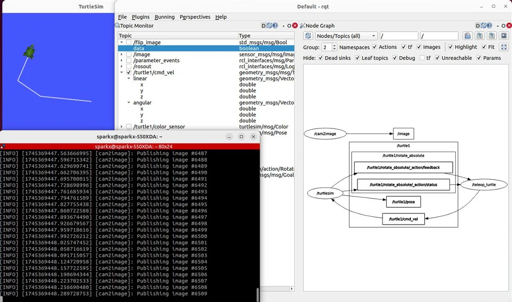
RQt 플러그인¶
- 표준화된GUI 절차 제공
- GUI 시작 및 종료 처리 용이함
- 다양한 옵션 저장 및 복원 가능
- API 제공
- RQt 플러그인API 사용 시 위 기능들을 비교적 쉽게 구현 가능 RQt 플러그인 RQt 플러그인(RQt Plugin) [ 활용]
- 노드/토픽 연결 상태를rqt_graph로점검
- 센서 데이터(LiDAR 거리값)을rqt_plot을 실시간 확인
- 서비스 호출 실습 시rqt_service_caller 사용
- 디버깅시rqt_consol로 에러 메시지 모니터링
- 파라미터 튜닝할 때rqt_reconfigure로 실시간 수정 ros2_ws/rqt_example/package.xml
RQt 패키지 RQt 플러그인 RQt 플러그인(RQt Plugin)
- 기본적으로 사용할RQt 플러그인ROS2 패키지는 다음과 같음 패키지 이름 설명 RQt 패키지 ‘rqt_gui’, ‘rqt_gui_cpp’, ‘rqt_gui_py’, ‘rqt_py_common’ 패키지 포함 rqt_gui 여러rqt 위젯을 단일 창에 도킹할 수 있는 위젯 패키지 rqt_gui_cpp C++ 클라이언트 라이브러리를 사용하여 제작할 수 있는RQt GUI 플러그인API 제공 rqt_gui_py Python 클라이언트 라이브러리를 사용하여 제작할 수 있는RQt GUI 플러그인API 제공 rqt_py_common Python으로 작성된RQt 플러그인에서 공용으로 사용되는 기능을 모듈로 제공하는 패키지 rqt_common_plugins rqt_action, rqt_bag 등20여개의RQt 플러그인을 포함하는 메타 패키지 qt_gui_core qt_gui, qt_gui_cpp, qt_gui_py_common, qt_gui_app, qt_dotgraph 등을 담은 메타 패키지 python_qt_binding QtCore, QtGui, QtWidgets 등을 사용할 때Python 언어 기반의Qt API를 제공하는 바인 딩 패키지 python_qt_binding RQt 플러그인 RQt 플러그인(RQt Plugin)
- Qt Python API 사용
- Python으로Qt API 사용시Qt C++ API 대신, Python으로 바 인 딩된API 사용
- 대표적Qt Python API : PyQt, PySide
- Python_qt_binding 패키지의 장점
- PyQt와PySide를 구분 없이 사용 가능
- 필요시 두 바인 딩API 간 전환 가능
-
RQt 플러그인 패키지 사용 순서
-
rqt_gui_py.plugin 모듈의Plugin 클래스 상속
- qt_gui.plugin 모듈의Plugin 클래스 상속
-
python_qt_binding.QtCore 모듈의Qobject 클래스 상속
-
PyQt와PySide는C++ 기반Qt 라이브러리를Python에서 사용할 수 있도록 바 인 딩한 것이다.
- 바인딩(binding)이란Python과C++ 사이에서 데이터를 변환하고 호출할 수 있도록해 주는 기술 RQt 개발 환경 RQt 플러그인 RQt 플러그인(RQt Plugin)
- RQt 플러그인 개발 환경
- Ubuntu 22.04 LTS, ROS2 Humble 기준
ros-humble-desktop을 설치하였다면, RQt 개발 환경은 설치되어 있음- 만약 설치가 되어 있지 않다면, 다음 명령어를 통해 설치
RQt 플러그인 작성 순서
RQt 플러그인 작성 순서
Python Style
1.
RQt 플러그인 패키지 생성
1.
2.
3.
일반적인 패키지 생성과 다르지 않지만, RQt 플러그인의 기본 기능 관련 및GUI 관련 패키지는 의존성 패키지로 포함
4.
특히, Python 언어로 작성하지만, RQt 플러그인의 일부로 작성하기 때문에, 빌드 형태는ament_cmake로설정
2.
패키지 설정 파일 수정
해당 섹션에서는 플러그인 작성 순서를 소개하고 있다. 제공된 코드를 받은 후 파일의 존재 유무만 확인해 보자.
$ cd ~/ros2_ws/src
$ ros2 pkg create rqt_example –build-type ament_cmake –dependencies rclpy rqt_gui rtq_ggi_py python_qt_binding
~/ros2_ws/src/rqt_example/package.xml
RQt 플러그인 작성 순서
RQt 플러그인 작성 순서
Python Style
3.
플러그인 파일 생성
4.
빌드 설정 파일 수정
5.
스크립트 폴더 및 파일 생성
6.
리소스 폴더 및UI 파일 생성
~/ros2_ws/src/rqt_example/plugin.xml
~/ros2_ws/src/rqt_example/package.xml
~/ros2_ws/src/rqt_example/scripts/rqt_example
~/ros2_ws/src/rqt_example/resource/rqt_example.ui
7.
소스 폴더 및 파일 생성
8.
런치 폴더 및 런치 파일 생성
~/ros2_ws/src/rqt_example/src/rqt_example/init.py
~/ros2_ws/src/rqt_example/src/rqt_example/examples.py
~/ros2_ws/src/rqt_example/src/rqt_example/examples_widget.py
~/ros2_ws/src/rqt_example/launch/rqt_plugin.launch.py
rqt_example
RQt 예제 구성
RQt example
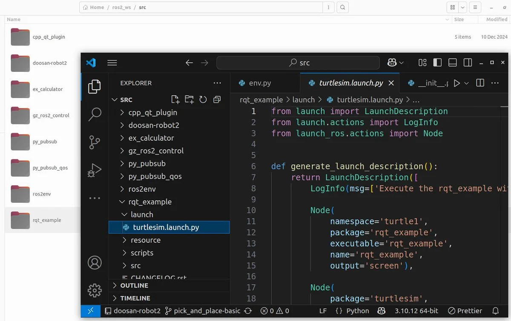
rqt_example 실행 화면 RQt 예제 구성 RQt example
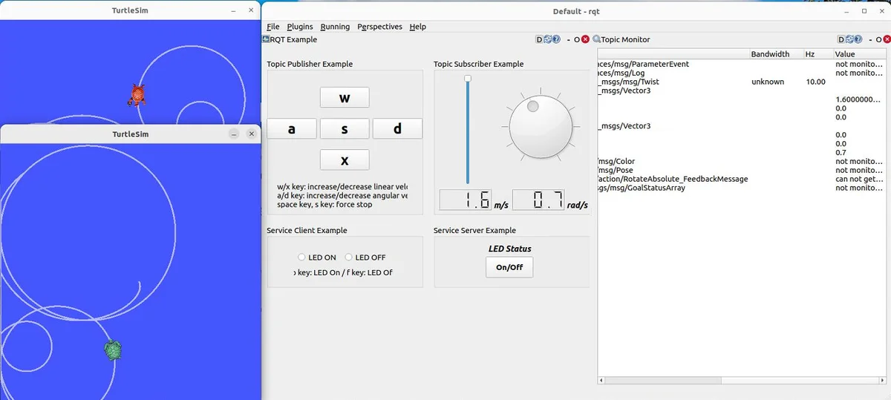
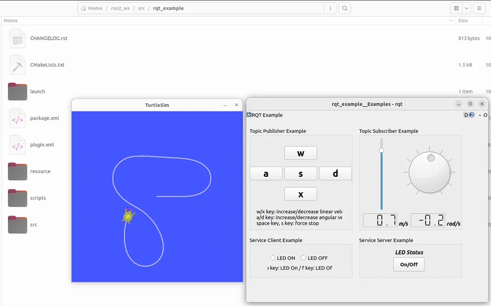
rqt_example RQt 예제 구성 RQt example
- RQt 기본GUI 위젯 사용
- Push button, Radio button, Slider, Dial, LCD 숫자, Label
- ROS2 기반 빌드
- ROS2의토픽Publisher와Subscriber, 서비스 서버와 클라이언트를 함께 사용
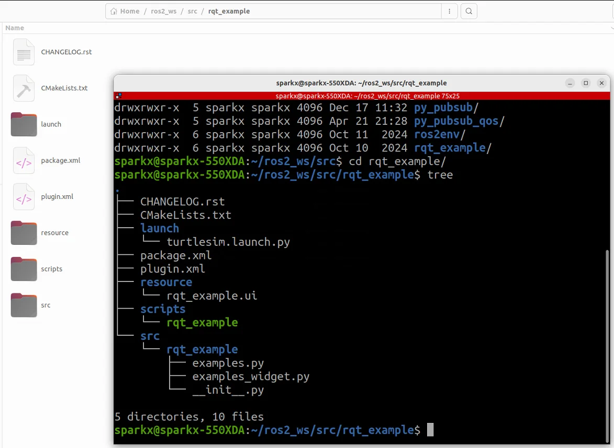
파일 트리 구조 RQt 예제 구성 RQt example 교재: p547 GUI 개발MVC(Model, View, Controller)
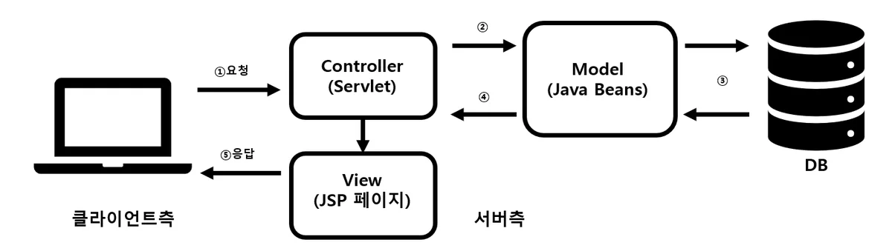
RQt 예제 구성 RQt 예제UI살펴보기
- 또는 직접Ubuntu 파일 탐색기에서 더블 클릭하여 실행
- 설치된 모든 플러그인을 강제로 다시 검색 ros2_ws
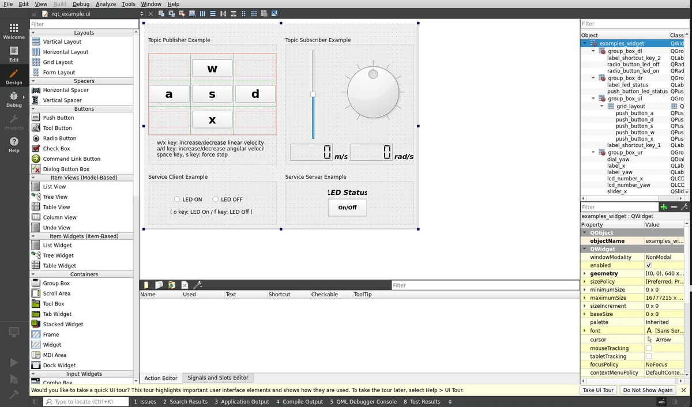
RQt 예제 구성 RQt 예제 설정 파일 살펴보기 패키지 설정 파일 수정 RQt에이 패키지에서 제공하려는 플러그인을 추가하는 기능 ros2_ws
RQt 예제 구성 RQt 예제 설정 파일 살펴보기
- 터미널 창에
rqt라고 입력하여, RQt를실행 - 메뉴 옵션에서Plugins > Actions, Configuration, Introspection 등 세부 항목 실행 가능한RQt 플러그인들 확인 가능
- 각 플러그인을 마우스 클릭만으로 실행할 수 있음 ✓ rqt_example 패키지의RQt 플러그인 또한 그림과 같이Plugins 메뉴에 포함 및 실행 가능 ✓ 이를 위해선RQt 플러그인 파일plugin.xml을 생성하고 알맞은 태그를 작성 RQt 플러그인 파일 생성
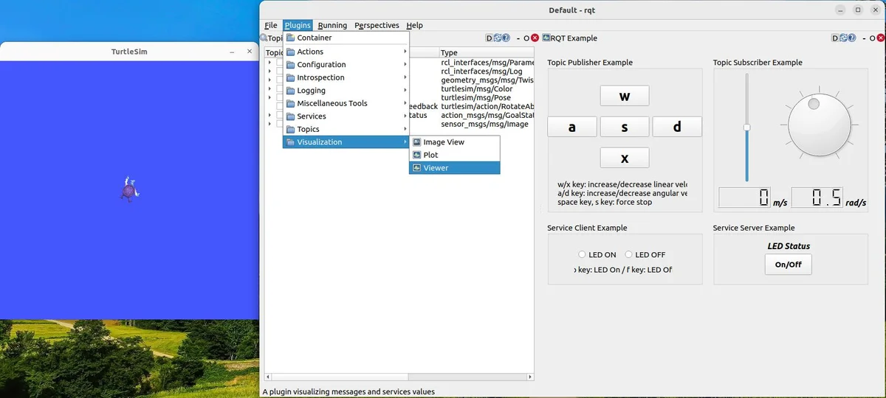
RQt 예제 구성 RQt 예제 설정 파일 살펴보기
- Group 태그가 메뉴의 세부 항목이 되며
RQt 예제 구성 RQt 예제 설정 파일 살펴보기
- 빌드 설정 파일CMakeLists.txt 도 일반적인ROS 패키지와 유사
- plugin.xml, resource, launch 폴더 및 하위 파일들을share 폴더에 설치
- Scripts 폴더의rqt_example 파일을lib 폴더에 설치 빌드 설정 파일 수정 ros2_ws
스크립트 폴더 및 파일 생성
- 스크립트 폴더에는RQt 플러그인을 지정하고 종료하는 코드를 기술
- RQt의 진입 코드라고 볼 수 있으며, rqt_gui 중main module의Main 클래스를 이용하여RQt 플러그인 기능 사용
- 메인 코드인examples 모듈의Examples 클래스 호출 RQt 예제 구성 RQt 예제 설정 파일 살펴보기 ros2_ws
리소스 폴더 및UI 파일 생성
- Qt의ui 파일은XML 태그를 이용
- 수작업으로 작업하지는 않고qtcreator에서 손쉽게 구성할 수 있다. RQt 예제 구성 RQt 예제 설정 파일 살펴보기 ros2_ws
소스 폴더 및 파일 생성
- rqt_example의 메인 소스 코드에 해당하는 파일들
- 다음 섹션에서 상세한 설명 RQt 예제 구성 RQt 예제 설정 파일 살펴보기 ros2_ws ros2_ws ros2_ws
런치 폴더 및 런치 파일 생성
- 런치 파일은turtlesim 패키지의turtlesim_node 노드와 함께 연동하여 테스트 가능하도록 구성
- turtlesim_node 노드의 토픽과 맞추기 위해namespace를
turtle1으로 설정 RQt 예제 구성 RQt 예제 설정 파일 살펴보기 ros2_ws
RQt 메인 소스 코드 RQt 예 제 소스 코드 분석 RQt 메인 소스 코드 ros2_ws ros2_ws
examples.py RQt 예 제 소스 코드 분석 RQt 메인 소스 코드
examples.py RQt 예 제 소스 코드 분석 RQt 메인 소스 코드
- Examples 클래스는
rqt_gui_py.plugin모듈의Plugin 클래스를 상속 - ROS RQt 플러그인 기본 기능 제공
- 플러그인 관리, 초기화 및 종료와 같은 기능 처리
- def init(self, context): super(Examples, self).init(context)
- 부모 클래스(Plugin)의 생성자를 호출하여 초기화
- Context는RQt에서 제공하는 실행 컨 텍스트로RQt본체와 함께 도킹되어 사용될 수 있게해 주고 플러그인의 환경 정보를 포함한다.
- Self.setObjectName(‘RQt example’)
- 플러그인의 객체 이름을‘RQt example’로 설정한다.
- 이 이름은RQt에서 플러그인을 관리할 때 사용한다.
- ExamplesWidget 클래스는 작성하고자하는UI를 포함한 실제 코드가 담긴 클래스
- ExamplesWidget 객체를 생성하여widget에저장.
- 이 노드가ExamplesWidget 클래스 내에서rclpy의Node 역할을 하는 것(실제GUI 요소를 포함하는 위젯 클래스)
- Context.node 를 전달하여ROS2노드와 연결 RQt 예 제 소스 코드 분석 RQt 메인 소스 코드
- Serial_number = context.serial_number()
- Context.serial_number()를 호출하여 플러그인의 시리얼 번호를 가져온다.
- 만약 시리얼 번호가1보다 크면, 창 제목, windowTitle()에시리 얼 번호를 추가한다.
- 이 기능은 동일한 플러그인을 여러 개 실행할 때, 각 플러그인 창을 구별할 수 있도록한다. 예, RQt example, RQt example(2).........
- Context.add_widget(self.widget)
- Context.add_widget(self.widget)을 호출하여ExamplesWidget을RQt 인터페이스에 추가한다.
- 이렇게 해야GUI가RQt창에 표시된다.
- Def shutdown_plugin(self):
- RQt 플러그인이 종료될 때 실행된다.
- 메서드를 호출하여 위젯의 종료 처리를 수행한다. examples.py examples_widget.py RQt 예 제 소스 코드 분석 RQt 메인 소스 코드
- ExamplesWidget 클래스는 앞서 설명한GUI 화면 구성을 담당하는rqt_example.ui 파일을 호출 및 화면에 띄우는 역할
- 다음과 같은 내용들을 포함
- Topic publisher, topic subscriber, service server, service client, timer, push button, radio button 등 examples_widget.py RQt 예 제 소스 코드 분석 RQt 메인 소스 코드
- Line : 34 ~ 36
- ament_index_python.resources 모듈의get_resource 함수를 이용하여,
rqt_example패키지의rqt_example.ui파일을loadUi 함수로 불러옴(패키지 경로를 가져옴) - 이를 통해qtcreator로 미리 만들어 둔UI를 화면에 띄울 수 있는 것(.ui파일을 로드해서Widget에적용)
examples_widget.py RQt 예 제 소스 코드 분석 RQt 메인 소스 코드
- Line : 48 ~ 52
- 예제에서 사용할ros 요소들을 선언
- 키보드의 키w, a, s, d, x, space bar 또는 각 버튼을 클릭하여, 로봇의 병진 속도(linear) 및 회전 속도(angular)를 변경할 수 있도록Publishing($ros2 interface show geometry_msgs/msg/Twist)
- Subscriber는 이 속도 값을 수신 받아slider와dial과 같은 인디 케이 터로 표현하거나LCD 숫자 형태로 값을 표시
- 서비스의 경우, radio button 두 개가 있는데, 이들 중 하나를 선택하면 해당 값을 서비스request 값으로 보냄
- 서비스response값으로 가상의LED가 켜지고 꺼짐을 나타낼 수 있는True, False를반한
examples_widget.py RQt 예 제 소스 코드 분석 RQt 메인 소스 코드
- Line : 54 ~ 60
- 해당 코드는 특정 콜백 함수를 정기적으로 실행할timer류에 대한 선언
- send_velocity : w, a, s, d, x, space bar 키 또는 버튼 클릭에 의해 변경된 속도값publishing 함수(100ms마다 호출)
- publish_timer는send_velocity 함수를 콜백 함수로 설정함으로써 주기적으로 퍼블리시함
- update_indicators : Subscribing한 속도 값을 처리하는 함수
- update_timer는update_indicators 함수를 콜백 함수로 설정, 30ms마다GUI 갱신
examples_widget.py RQt 예 제 소스 코드 분석 RQt 메인 소스 코드
- Line : 146 ~ 154
- send_velocity 함수는 이와 같이geometry_msgs 패키지의Twist 인터페이스를 사용
- 지정된 병진 속도와 회전 속도를 각각linear.x 와angular.z로 지정하여Publishing하는 역할
- 토픽Publishing 주기는100ms(0.1sec)
examples_widget.py RQt 예 제 소스 코드 분석 RQt 메인 소스 코드
- Line : 156 ~ 161
- update_indicators 함수는 이와 같이slider 형태, dial 형태, LCD number 형태의 위젯으로 구성
- 각 위젯의 값으로는 서브스크라이브 한 병진(linear) 속도와 회전(angular) 속도를 사용
- 해당 함수의 토픽 값을GUI 형태로 볼 수 있게 됨
examples_widget.py RQt 예 제 소스 코드 분석 RQt 메인 소스 코드
- Line : 85 ~ 86
- update_indicators 함수에서 사용된 병진 속도 및 회전 속도는 이와 같이get_velocity 함수가 토픽을 수신할 때마다 업데이트
- 이 함수에서 사용된 인터페이스는 토픽 퍼블리셔와 마찬가지로Twist 인터페이스
examples_widget.py RQt 예 제 소스 코드 분석 RQt 메인 소스 코드
- Line : 63 ~ 77
- push_button으로 지정된w, a, s, d, x 버튼을 마우스를 눌렀을 때 호출되는 함수들을 지정
- 또한, 해당하는 키보드 자판을 눌렀을 때 동일 효과를 주기 위한short cut 설정
examples_widget.py RQt 예 제 소스 코드 분석 RQt 메인 소스 코드
- Line : 103 ~ 117
- 각push_button을 눌렀을 때 실행되는 함수는 이와 같으며, 현재의 병진 속도와 회전 속도를 변화시킴
- 단위는SI 단위로, 병진 속도에m/sec, 회전 속도에는rad/sec
examples_widget.py RQt 예 제 소스 코드 분석 RQt 메인 소스 코드
- Line : 79 ~ 83
- LED ON, LED OFF 버튼을 눌렀을 때call_led_service라는 서비스 클라이언트의 요청 함수를 지정한 구문
- push_button과 비슷하게LED ON은 키보드의
o자판, OFF는f자판을 숏 컷으로 설정
examples_widget.py RQt 예 제 소스 코드 분석 RQt 메인 소스 코드
- Line : 119 ~ 144
- call_led_service 함수는radio button의 클릭 상태를 보고request 값으로True 또는False를 지정하여 요청
examples_widget.py RQt 예 제 소스 코드 분석 RQt 메인 소스 코드
- 서비스 클라이언트의 요청을 받아 처리하는 함수
- SetBool 서비스 인터페이스를 사용하며request.data 값에 따라 버튼의 상태를 변경한 후 클라이언트에게 반환
- 버튼 상태와 색상 변경이 성공적으로 완료되면, 그 결과를
success와message변수에 담아 서비스 클라이언트에 반환 - Line : 88 ~ 101
examples_widget.py RQt 예 제 소스 코드 분석 RQt 메인 소스 코드
- Line : 163 ~ 169
- examples.py의shutdown_plugin 함수가 호출하는 함수
- rqt_example 노드를 실행한 터미널 창에서ctrl + c (SIGINT) 신호 또는UI화면에서의 창 닫기 버튼을 눌러 종료할 때 호출됨
패키지 빌드 RQt 플러그인 예제 실행 Turtlesim Node 연동 예제
- cd ~/rqt_example
- colcon build
- source install/setup.bash 패키지 빌드 RQt 플러그인 예제 실행 Turtlesim Node 연동 예제
- 아래 명령어를 통해 기본적인rqt_example이 실행되는지 확인
- 만약
qt_gui_main() found no plugin matching~과 같은 에러 발생 시 →$rqt --force-discover명령어 실행 또는 →rm ~/.config/ros.org/rqt_gui.ini명령어로 설정 파일 삭제
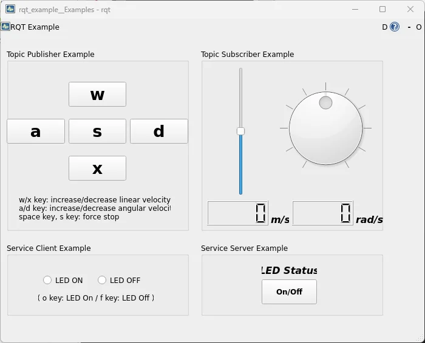
런치 파일 실행 RQt 플러그인 예제 실행 Turtlesim Node 연동 예제
- ros2 launch rqt_example turtlesim.launch.py
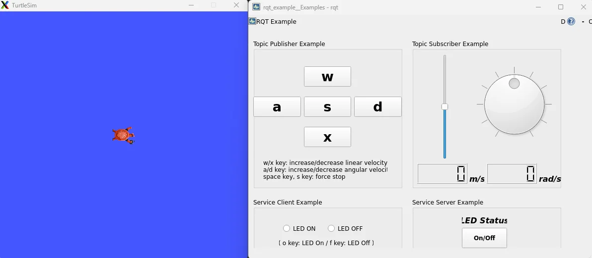
런치 파일 실행 RQt 플러그인 예제 실행 Turtlesim Node 연동 예제
RQt 플러그인 예제 실행 Turtlesim Node 연동 예제
- 키보드 조작 후 값이 변경되는 지 확인 런치 파일 실행
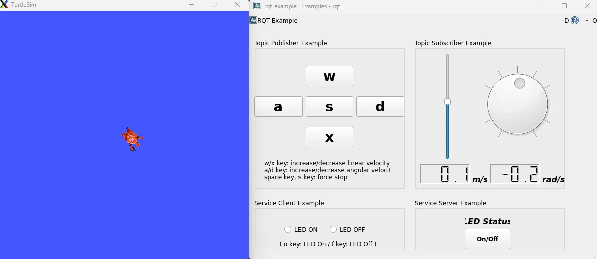
런치 파일 실행 RQt 플러그인 예제 실행 Turtlesim Node 연동 예제
- 새로운 터미널을 열고, source install/setup.bash 후,
- ros2 topic echo /turtle1/cmd_vel 을 통해, 토픽에 발행되는 값 확인
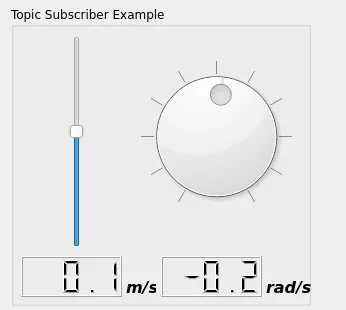
RQt 플러그인 예제 실행 Turtlesim Node 연동 실습
- 키보드, 병진 속도, 회전 속도 증가/감소 단위 값 수정해서Build 해 보기 코드 수정해서Build 후 실행해 보기 https://github.com/ros-visualization https://github.com/ros-visualization

Lifecycle¶
- Lifecycle
- ROS2에서는 노 드의 상태 관리를 위해Lifecycle 인터페이스 제공
- 노드는 주요 상태(Unconfigured, Inactive, Active, Finalized)와 전환 상태(Configuring, CleaningUp 등)를가짐
- 노드를 체계적으로 관리 및 상태 전환을 통해 노드를 구성, 활성화, 비활성화, 정리 가능 Lifecycle Lifecycle [ 사용 목적]
- 노드가 준비 중인지
- 아직 데이터 수집 안 한 상태인지
- 안전하게 작동 가능한 상태인지
-
위와 같이 노드의 상태 변화를 명확하게 관리
-
OS는 복수 개의 프로세스를 효율적으로 관리하기 위해 프로세스의 상태를 정의하고, 상태의 전환을 조율함
- 프로세스의 상태는 프로세서, 메모리와 같은 자원의 할당 여부에 따라 정의됨
- 프로세스의 상태는 처리 순서, 교착 상태, 메모리 할당 등에 의해 전환될 수 있음 Lifecycle Lifecycle
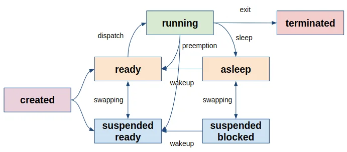
- ROS2에서는Lifecycle 인터페이스를 통해 노 드의 상태 확인이나 재실행, 교체가 가능
- 예시: 카메라 센서를 통해 받은 이미지 정보를 발간하는 노드
- 먼저 노드를 동작시키기 전에 카메라와의 통신을 위한 포트가 제대로 잡혔는지 확인
- 만약 노 드가 동작되는 도중에 에러가 발생하였다면 잠시 그 동작을 멈추고 에러를 해결한 다음 재시작
-
주변 환경의 변화로 인해 에러를 해결할 수 없다면 해당 노드는 종료시키고 준비된 다른 노드를 동작 Lifecycle Lifecycle
-
노드의 상태와 상태 전환(Transition)
- 파란 박스: 주요 상태
- 노란 박스: 전환 상태
- 검정 색 화살표: 전환을 나타냄
- 파란색 화살표: 전환 성공 시 주요 상태의 변화
- 빨간색 화살표: 전환 실패 시 주요 상태의 변화
- 빨간색 작은 원: 에러가 발생할 수 있는 상태 Lifecycle Lifecycle 주요 상태 Lifecycle Lifecycle
- Unconfigured: 노드가 생성된 직후의 상태, 에러 발생 이후 다시 조정될 수 있는 상태
- Inactivate: 노드가 동작을 수행하지 않는 상태. 파라미터 등록, 토픽 발간과 구독 추가 삭제 등을(재)구성할 수 있는 상태
- Activate: 노드가 동작을 수행하는 상태.
- Finalized: 노드가메모리에서해제되기직전상태노드가파괴되기전디버깅이나내부 검사를 진행할 수 있는 상태
- Configuring: 노드를 구성하기 위해 필요한 설정 수행
- CleaningUp: 노드가 처음 생성되었을 때 상태와 동일하게 만드는 과정 수행
- Activating: 노드가 동작을 수행하기 전 마지막 준비 과정 수행
- Deactivating : 노드가 동작을 수행하기 전으로 돌아가는 과정 수행
- ShuttingDown: 노드가 파괴되기 전 필요한 과정 수행
- ErrorProcessing: 사용자 코드가 동작되는 상태에서 발생하는 에러를 해결하기 위한 과정 수행 전환 상태 Lifecycle Lifecycle
- 노드의 상태와 상태 전환
- Create: 노드를 생성하고 초기 상태로 설정
- Configure: 노드를 구성하여 준비 상태로 만듦
- Cleanup: 노드를 초기화하여 이전 상태로 되돌림
- Activate: 노드를 활성화하여 기능을 수행할 수 있게함
- Deactivate: 노드를 비활성화하여 동작을 멈춤
- Shutdown: 노드를 안전하게 종료하는 과정
- Destroy: 노드를 메모리에서 완전히 제거 Lifecycle Lifecycle
- 전환
-
다음 명령어로 노드들을 실행(각기 다른 터미널에서 실행) Lifecycle Lifecycle
-
lc_client를 실행시킬 시lc_talker의 상태가configure →Inactive →Activate →Inactive Active →Inactivate →Finalized의 순서로 전환되는 것을 확인 가능 Lifecycle Lifecycle
-
Security는SROS의 유틸리티로, DDS-Security를ROS2에서 사용하기 위해 필요한 도구를 모아 둔 것
- 보안 키 저장소 생성
- 보안 키 생성
-
환경 변수 구성 ros2 security ~/sros2_demo/demo_keystore/enclaves디렉토리 확인해 보기 Terminator 2개 실행해서 진행: menu →broadastall
-
환경 변수3가지 1. ROS_SECURITY_KEYSTORE : 보안 설정 파일을 보관하는 폴더를 지정. demo_keystore 2. ROS_SECURITY_ENABLE : 보안 설정의On/Off 기능으로true/false 형태로 설정. Default는false 3. ROS_SECURITY_STRATEGY : 보안 설정 방법. Enforce로 설정하면 보안 설정 파일이 없는 메시지 통신은 금지, Permissive의 경우 비보안 참여자로 참석시킴. ※ 위 환경 변수3가지는 노드를 실행할 때마다 매번 각 터미널에서 선언해야함. ROS2 보안 기능을 지속적으로 사용할 예정이라면~/.bashrc에 추가해야함
- Security는SROS의 유틸리티로, DDS-Security를ROS2에서 사용하기 위해 필요한 도구를 모아 둔 것
- talker node 실행하여 데모를 시작
- 새로운 터미널에서listener node 실행
- 이 노드들은 인증 및 암호화를 사용하여 통신함 (해당 노드들은 적절한 키와 인증서를 생성하였으므로 통신이 가능)
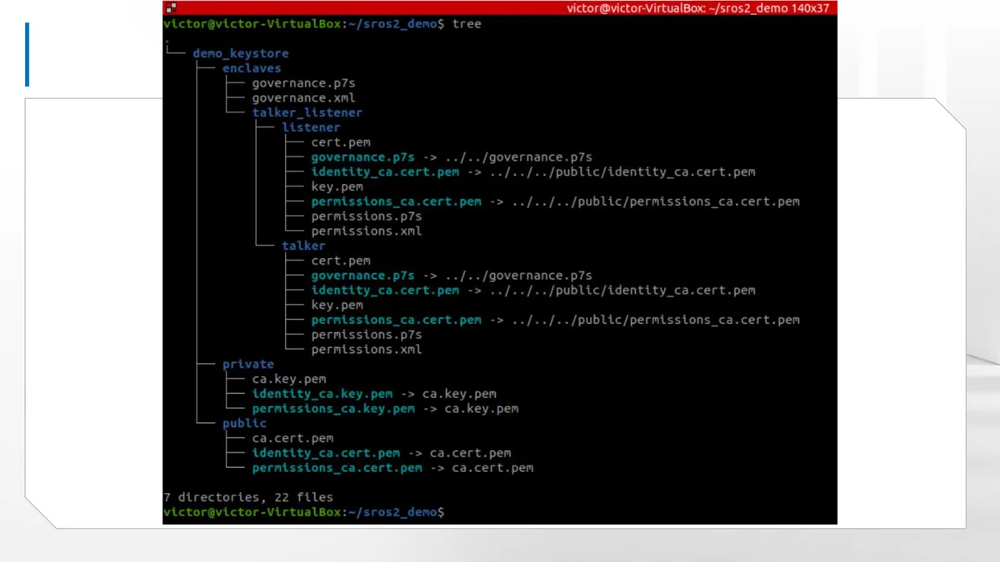
192.168.1.99 192.168.1.32 192.168.1.55 192.168.1.78